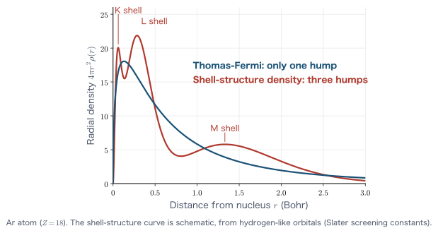

Chapter 4The Thomas–Fermi Model and Functional Derivatives
In Chapter 3 we analyzed the homogeneous electron gas (the free-electron gas) quantum-mechanically and, through the concepts of the Fermi sphere and the Fermi wave number, learned that the kinetic energy can be written as a power $\rho^{2/3}$ of the electron density $\rho$ (per electron). The electron density of a real atom or molecule, however, is not uniform: it is high near the nucleus and low far away. In this chapter we introduce the idea of the local density approximation, in which “the electron gas is regarded as locally uniform around each point in space,” and, applying it to the kinetic energy, construct the first density functional theory—the Thomas–Fermi (TF) model.
Along the way we introduce the functional derivative, a mathematical tool that we will use repeatedly throughout this book. A functional derivative is “a derivative with respect to a function,” and every equation of density functional theory (the TF equation, the Hartree–Fock equations, the Kohn–Sham equations) is derived with this tool. Please read the Math Notes in this chapter carefully.
The goals of this chapter are the universal equation $\sqrt{x}\,\varphi'' = \varphi^{3/2}$, obtained by nondimensionalization of the TF equation for a neutral atom, and the universal law for the total energy, $E_{\mathrm{TF}} = -0.7687\,Z^{7/3}$ Ha. Finally, we examine the successes and limitations of the TF model and sort out what must be refined in the following chapters. Unless otherwise noted, this chapter uses Hartree atomic units ($\hbar = m_e = e = 4\pi\varepsilon_0 = 1$; the unit of energy is the hartree, $1\ \mathrm{Ha} = 27.211\ \mathrm{eV}$, and the unit of length is the Bohr radius $a_0 = 0.5292\ \mathrm{\unicode{x212B}}$) (see Chapter 1).
- The idea of the local density approximation (LDA): divide space into cells and approximate each cell by a homogeneous electron gas with the local density
- The definition of functionals and functional derivatives, and how to compute the derivatives of representative functionals (linear functionals, power-law functionals, the Hartree term, and functionals containing gradients)
- Constrained variation by the method of Lagrange multipliers, and the derivation of the Thomas–Fermi equation
- The physical meaning of the chemical potential $\mu$ ($\mu = \partial E/\partial N$)
- Application to neutral atoms: nondimensionalization, the universal equation $\sqrt{x}\,\varphi''=\varphi^{3/2}$, and the $Z^{7/3}$ law for the energy
- The limitations of the TF model (absence of shell structure, Teller's no-binding theorem, absence of exchange and correlation) and the path to overcoming them
4.1 The Idea of the Local Density Approximation
The homogeneous electron gas treated in Chapter 3 had a remarkable property: once the density $\rho$ (the number of electrons per unit volume) is given, all physical quantities are determined. In particular, in the ground state the Fermi wave number $k_F$ is given by
\begin{equation} k_F = (3\pi^2 \rho)^{1/3} \label{eq:4-kf} \end{equation}(Chapter 3), and the average kinetic energy per electron is $\frac{3}{5}\varepsilon_F = \frac{3}{10}k_F^2$, that is,
\begin{equation} t(\rho) = \frac{3}{10}\left(3\pi^2\right)^{2/3} \rho^{2/3} \label{eq:4-t-per-electron} \end{equation}Here $t(\rho)$ is just a function that represents “the kinetic energy per electron in a homogeneous electron gas of density $\rho$” (it is not a functional; we make this distinction clear in Section 4.2). Note that Chapter 3 uses the same symbol $t(\rho)$ for the kinetic energy per unit volume, $C_F\rho^{5/3}$. The two differ by a factor of $\rho$ ($C_F\rho^{5/3} = \rho\times t(\rho)$), so please be careful when cross-referencing between chapters. In this chapter and in Chapter 7, we write the per-electron quantity as $t(\rho)$.
However, the electron density $\rho(\rr)$ inside an atom or molecule varies strongly from place to place. Very close to the nucleus $\rho$ is extremely large, and outside the atom it becomes exponentially small. Can we somehow estimate the energy of such a nonuniform system using only our knowledge of the homogeneous electron gas?
Let us consider the following approximation. Divide the whole space into cells (small boxes) of sufficiently small volume $\Delta V$. Let $\rr_i$ be a representative point of the $i$th cell; if the cell is small enough, the density inside it can be regarded as nearly constant, equal to $\rho(\rr_i)$. We then replace the contents of each cell by “a homogeneous electron gas of density $\rho(\rr_i)$.” Since the number of electrons in cell $i$ is $\rho(\rr_i)\Delta V$, the kinetic energy of cell $i$ is estimated, as “energy per electron × number of electrons,” to be
\begin{equation} \Delta T_i \approx t(\rho(\rr_i)) \times \rho(\rr_i)\,\Delta V \label{eq:4-cell-energy} \end{equation}The kinetic energy of the whole system is the sum of the cell contributions, and in the limit $\Delta V \to 0$ this sum turns into an integral as a Riemann sum:
\begin{equation} T \approx \sum_i t(\rho(\rr_i))\,\rho(\rr_i)\,\Delta V \;\xrightarrow{\ \Delta V \to 0\ }\; \int t(\rho(\rr))\,\rho(\rr)\,\dd^3 r . \label{eq:4-riemann} \end{equation}This is the basic idea of the local density approximation (LDA). In general, when some energy density per electron, $\varepsilon(\rho)$, is known for the homogeneous electron gas, we approximate the corresponding energy of a nonuniform system by
\begin{equation} E \approx \int \varepsilon(\rho(\rr))\,\rho(\rr)\,\dd^3 r \label{eq:4-lda-general} \end{equation}Note that the integrand is determined by the density $\rho(\rr)$ at each point $\rr$ alone (that is, it is local). To evaluate the energy density at the point $\rr$, we use neither the density at neighboring points nor the gradient of the density at all. This is the meaning of “local.”
Physical Meaning: When is this approximation good?
For the cell-division argument to be justified, two mutually contradictory conditions must be satisfied at the same time. (1) The cells must be small enough that the density can be regarded as constant within a cell. (2) The cells must be large enough that the electrons in a cell can be treated as a “homogeneous electron gas”—that is, large enough to contain many electrons so that the Fermi-sphere argument (Chapter 3) applies. The two are compatible when the spatial variation of the density is sufficiently slow on the scale of the typical electron wavelength ($\sim 1/k_F$), that is, when $|\nabla \rho|/\rho \ll k_F$. The density inside an atom actually varies rapidly, so this condition is often violated. Nevertheless, the fact that the LDA works surprisingly well in practice, and the reason for it (the sum rule of the exchange-correlation hole), will be discussed in Chapter 7.
The right-hand side of Eq. \eqref{eq:4-lda-general} is a correspondence in which giving one function $\rho(\rr)$ determines one number $E$. Such a “map from functions to numbers” is called a functional. To derive the equation of the Thomas–Fermi model, we must “differentiate” this functional with respect to the density $\rho$ and write down the extremum condition. We therefore begin by defining precisely what the derivative of a functional is. The next section contains the most important Math Note in the entire book.
4.2 Math Note: Functionals and Functional Derivatives
This entire section is devoted to mathematical preparation. The functional derivative introduced here is the tool from which we derive not only the Thomas–Fermi equation of this chapter, but also the Hartree–Fock equations of Chapter 5, the Hohenberg–Kohn variational principle of Chapter 9, and the Kohn–Sham equations of Chapter 10. In later chapters we will move ahead by citing “by the result of Section 4.2,” so there is no need to hurry here; please read on while working through all five examples yourself.
4.2.1 The difference between a function and a functional
First we sort out the terminology. A function, with which you have been familiar since junior high school, is a rule that assigns one number to each number given. For example, $f(x)=x^2$ returns $9$ for $x=3$. There may be several variables: $f(x_1,x_2,\dots,x_M)$ assigns one number to a set of $M$ numbers.
A functional, in contrast, is a rule that assigns one number to each function given. The only difference is that the input is not “a single number” but “an entire function.” To emphasize that it takes a function as its argument, the convention is to write a functional with square brackets rather than parentheses, as $F[f]$.
Definition: Functional
A rule $F$ that assigns one real (or complex) number $F[f]$ to each element $f$ of a set of functions (the domain) $\mathcal{D}$ is called a functional. Most of the functionals treated in this book have the integral form
\begin{equation} F[f] = \int g\bigl(f(\rr),\nabla f(\rr),\rr\bigr)\,\dd^3 r \label{eq:4-functional-form} \end{equation}Note that $\rr$ is an integration variable and not a variable of $F$. Once the integral is carried out, $\rr$ disappears, and what remains is a single number.
Let us give some concrete examples. In what follows, $\rho(\rr)$ is always the input function.
- $N[\rho] = \displaystyle\int \rho(\rr)\,\dd^3 r$: given the density, the number called the total number of electrons is determined. This is a functional.
- $T_{\mathrm{TF}}[\rho] = C_F\displaystyle\int \rho(\rr)^{5/3}\,\dd^3 r$: given the density, the number called the kinetic energy is determined. This is a functional (Section 4.3).
- $t(\rho) = \frac{3}{10}(3\pi^2)^{2/3}\rho^{2/3}$ (Eq. \eqref{eq:4-t-per-electron}): this is a function. The input is a single number, “the density of the homogeneous electron gas,” and not a function. This is what we meant in Section 4.1 when we noted that “$t(\rho)$ is just a function.”
- $\rho(\rr_0)$ ($\rr_0$ is a fixed point): given the density, the number called the value at the point $\rr_0$ is determined. This too is a perfectly good functional. Using the delta function, if we write $\rho(\rr_0)=\int \delta(\rr-\rr_0)\rho(\rr)\dd^3 r$, it also fits the form of Eq. \eqref{eq:4-functional-form}.
4.2.2 Definition of the functional derivative
Before defining the functional derivative, let us review the differentiation of a function of several variables. If each variable of a function $F(\rho_1,\dots,\rho_M)$ of $M$ variables is shifted slightly, $\rho_i \to \rho_i + \delta\rho_i$, the change in $F$, up to first order in the Taylor expansion, can be written as
\begin{equation} \delta F = F(\rho_1+\delta\rho_1,\dots) - F(\rho_1,\dots) = \sum_{i=1}^{M} \frac{\partial F}{\partial \rho_i}\,\delta\rho_i + O(\delta\rho^2) \label{eq:4-multivar} \end{equation}This equation can be read as “the partial derivative $\partial F/\partial\rho_i$ is the coefficient when the change $\delta F$ is expressed as a linear expression in the changes $\delta\rho_i$ of the variables.” The functional derivative is what results when we carry this way of reading over to a functional as it is.
As in Section 4.1, let us divide space into cells of volume $\Delta V$ and approximate the function $\rho(\rr)$ by the sequence of its values in the cells, $\rho_i \equiv \rho(\rr_i)$ (Figure 4.2, right). The functional $F[\rho]$ then becomes a function $F(\rho_1,\dots,\rho_M)$ of $M$ numbers, and Eq. \eqref{eq:4-multivar} can be used. To turn the sum back into an integral, we factor out one $\Delta V$ and
\begin{equation} \delta F = \sum_{i=1}^{M} \left(\frac{1}{\Delta V}\frac{\partial F}{\partial \rho_i}\right)\delta\rho_i\,\Delta V \label{eq:4-fd-discrete} \end{equation}rewrite it in this form. If we regard the contents of the parentheses as a function of $\rr_i$ and write it as $\dfrac{\delta F}{\delta\rho(\rr_i)}$, then in the limit $\Delta V\to 0$ the right-hand side of Eq. \eqref{eq:4-fd-discrete} passes from a Riemann sum to an integral, and we obtain $\delta F = \int \frac{\delta F}{\delta\rho(\rr)}\delta\rho(\rr)\,\dd^3 r$. This is the functional derivative.
Definition: Functional derivative
For a functional $F[\rho]$, suppose that the change produced by adding an arbitrary small variation $\delta\rho(\rr)$ can be written in the form
\begin{equation} F[\rho+\delta\rho] - F[\rho] = \int \frac{\delta F}{\delta \rho(\rr)}\,\delta\rho(\rr)\,\dd^3 r \;+\; O\!\left(\delta\rho^2\right) \label{eq:4-fd-def} \end{equation}Then $\dfrac{\delta F}{\delta\rho(\rr)}$, which appears in the integrand, is called the functional derivative of $F$. Note that $\delta F/\delta\rho(\rr)$ is a function of $\rr$ (differentiating a functional yields a function).
Math Note: The actual calculation procedure (reducing to one variable)
Rather than using the definition \eqref{eq:4-fd-def} directly, the following procedure is more mechanical and less error-prone. Prepare an arbitrary test function $\eta(\rr)$ (sufficiently smooth and going to $0$ sufficiently fast at infinity) and a real parameter $\varepsilon$, make the replacement $\rho \to \rho + \varepsilon\eta$, and regard $F[\rho+\varepsilon\eta]$ as a function of $\varepsilon$. This is just a function of one variable, so ordinary differentiation is possible. Setting $\delta\rho = \varepsilon\eta$ in the definition \eqref{eq:4-fd-def} gives $F[\rho+\varepsilon\eta]-F[\rho] = \varepsilon\int(\delta F/\delta\rho)\eta\,\dd^3r + O(\varepsilon^2)$, so differentiating both sides with respect to $\varepsilon$ and setting $\varepsilon=0$ yields
\begin{equation} \left.\frac{\dd}{\dd\varepsilon}F[\rho+\varepsilon\eta]\right|_{\varepsilon=0} = \int \frac{\delta F}{\delta\rho(\rr)}\,\eta(\rr)\,\dd^3 r \label{eq:4-fd-gateaux} \end{equation}If we evaluate the left-hand side and arrange it into the form of the right-hand side (an integral multiplied by $\eta$), the coefficient of $\eta$ is directly $\delta F/\delta\rho$. Because $\eta$ is arbitrary, reading off the coefficient gives a unique result (if $\int h(\rr)\eta(\rr)\dd^3 r = 0$ holds for any $\eta$, then $h\equiv 0$; this is called the fundamental lemma of the calculus of variations).
As the most basic example, consider the functional $F[\rho]=\rho(\rr')$ ($\rr'$ is a fixed point). Since $F[\rho+\varepsilon\eta]=\rho(\rr')+\varepsilon\eta(\rr')$, the left-hand side becomes $\eta(\rr')=\int\delta(\rr-\rr')\eta(\rr)\dd^3r$, and we obtain
\begin{equation} \frac{\delta \rho(\rr')}{\delta \rho(\rr)} = \delta(\rr-\rr') \label{eq:4-fd-identity} \end{equation}This is the continuous version of $\partial \rho_j/\partial\rho_i = \delta_{ij}$ for functions of several variables, with the Kronecker delta replaced by the Dirac delta function.
Below, we calculate in turn the five types that are actually needed in density functional theory.
4.2.3 Example (i): The linear functional $\int \rho v\,\dd^3 r$
This is the form of the external potential term. Let $v(\rr)$ be a given function that does not depend on $\rho$.
\begin{align} F[\rho+\varepsilon\eta] &= \int \bigl(\rho(\rr)+\varepsilon\eta(\rr)\bigr)\,v(\rr)\,\dd^3 r \label{eq:4-lin1}\\ &= \int \rho(\rr) v(\rr)\,\dd^3 r + \varepsilon\int \eta(\rr) v(\rr)\,\dd^3 r \label{eq:4-lin2}\\ &= F[\rho] + \varepsilon\int v(\rr)\,\eta(\rr)\,\dd^3 r \label{eq:4-lin3} \end{align}The first line is simply a substitution into the definition. In the second line we expanded the integrand and used the linearity of the integral to split it into two integrals ($\varepsilon$ is a constant, so it can be taken outside the integral). In the third line we used the fact that the first term is $F[\rho]$ itself. In this case, terms of second and higher order in $\varepsilon$ are absent from the start. Differentiating Eq. \eqref{eq:4-lin3} with respect to $\varepsilon$ and setting $\varepsilon = 0$ gives $\int v\eta\,\dd^3r$, and comparing this with the right-hand side of Eq. \eqref{eq:4-fd-gateaux} lets us read off the coefficient of $\eta$:
“The function multiplying $\rho$ comes out as it is,” in analogy with $\frac{\dd}{\dd x}(ax) = a$. Setting $v=1$, we also see that the functional derivative of the total number of electrons, $N[\rho]=\int\rho\,\dd^3r$, is $\delta N/\delta\rho(\rr)=1$. We will use this result in Section 4.4 when we deal with the constraint of particle-number conservation.
4.2.4 Example (ii): Power-law local functionals $\int \rho^{\alpha}\,\dd^3 r$
The kinetic energy ($\alpha=5/3$) and the exchange energy ($\alpha=4/3$) are of this type. Let $\alpha$ be a real constant and consider $F[\rho]=\int\rho(\rr)^\alpha\dd^3 r$. First we expand the integrand in $\varepsilon$. At each point $\rr$, we use the one-variable Taylor expansion $(a+h)^\alpha = a^\alpha + \alpha a^{\alpha-1}h + \frac{1}{2}\alpha(\alpha-1)a^{\alpha-2}h^2+\cdots$ with $a=\rho(\rr)$ and $h=\varepsilon\eta(\rr)$, which gives
\begin{align} \bigl(\rho+\varepsilon\eta\bigr)^{\alpha} &= \rho^{\alpha} + \alpha\,\rho^{\alpha-1}\,(\varepsilon\eta) + \frac{\alpha(\alpha-1)}{2}\rho^{\alpha-2}(\varepsilon\eta)^2 + \cdots \label{eq:4-pow1}\\ &= \rho^{\alpha} + \varepsilon\,\alpha\,\rho^{\alpha-1}\eta + O(\varepsilon^2) \label{eq:4-pow2} \end{align}(we are considering the region where $\rho\gt0$; the expansion in the first line converges for $|\varepsilon\eta|\lt\rho$). Integrating this, we obtain
\begin{align} F[\rho+\varepsilon\eta] &= \int \rho^{\alpha}\dd^3 r + \varepsilon\int \alpha\,\rho(\rr)^{\alpha-1}\eta(\rr)\,\dd^3 r + O(\varepsilon^2) \label{eq:4-pow3}\\ \left.\frac{\dd F}{\dd\varepsilon}\right|_{\varepsilon=0} &= \int \alpha\,\rho(\rr)^{\alpha-1}\,\eta(\rr)\,\dd^3 r \label{eq:4-pow4} \end{align}In the first line we integrated Eq. \eqref{eq:4-pow2} term by term (interchanging the integral and the expansion is allowed if the integrand is sufficiently smooth and the integral converges). In the second line we differentiated with respect to $\varepsilon$ and set $\varepsilon=0$: the first term does not depend on $\varepsilon$ and so vanishes, and in the third term, even after differentiation, terms of first or higher order in $\varepsilon$ remain, which vanish at $\varepsilon=0$. Comparing with Eq. \eqref{eq:4-fd-gateaux}, we find
The result amounts to simply “carrying out the ordinary derivative $\frac{\dd}{\dd\rho}\rho^\alpha = \alpha\rho^{\alpha-1}$ on the spot.” More generally, for a local functional $F[\rho]=\int f(\rho(\rr))\dd^3 r$, whose integrand is determined only by the value of $\rho$, exactly the same calculation gives
\begin{equation} \frac{\delta F}{\delta \rho(\rr)} = f'\bigl(\rho(\rr)\bigr) \qquad\left(f' = \frac{\dd f}{\dd\rho}\right) \label{eq:4-fd-local} \end{equation}The key point is that the integral sign disappears and only an ordinary derivative remains. For the case $\alpha=5/3$ needed in this chapter,
\begin{equation} \frac{\delta}{\delta\rho(\rr)}\int \rho^{5/3}\dd^3 r = \frac{5}{3}\rho(\rr)^{2/3} \label{eq:4-fd-53} \end{equation}holds. Let us remember that the exponent drops from $5/3$ to $2/3$. The $\rho^{2/3}$ that appears on the left-hand side of the Thomas–Fermi equation in Section 4.4 comes from here.
4.2.5 Example (iii): The Hartree term and the treatment of the “factor of 2”
Next is the case in which the integral is a double integral. We differentiate the classical electron–electron Coulomb repulsion energy (the Hartree term)
\begin{equation} J[\rho] = \frac{1}{2}\iint \frac{\rho(\rr)\,\rho(\rr')}{\abs{\rr-\rr'}}\,\dd^3 r\,\dd^3 r' \label{eq:4-hartree-def} \end{equation}This is where beginners tend to stumble, and they are apt to memorize only the conclusion, “since there are two $\rho$'s, a factor of 2 comes out and cancels the $\frac{1}{2}$ in front.” Let us look carefully at why the factor of 2 appears. Substituting $\rho\to\rho+\varepsilon\eta$ and expanding the numerator, we have:
\begin{align} J[\rho+\varepsilon\eta] &= \frac{1}{2}\iint \frac{\bigl(\rho(\rr)+\varepsilon\eta(\rr)\bigr)\bigl(\rho(\rr')+\varepsilon\eta(\rr')\bigr)}{\abs{\rr-\rr'}}\,\dd^3r\,\dd^3r' \label{eq:4-h1}\\ &= \frac{1}{2}\iint \frac{\rho(\rr)\rho(\rr')}{\abs{\rr-\rr'}}\dd^3r\,\dd^3r' + \frac{\varepsilon}{2}\iint \frac{\eta(\rr)\rho(\rr')}{\abs{\rr-\rr'}}\dd^3r\,\dd^3r' \notag\\ &\qquad + \frac{\varepsilon}{2}\iint \frac{\rho(\rr)\eta(\rr')}{\abs{\rr-\rr'}}\dd^3r\,\dd^3r' + \frac{\varepsilon^2}{2}\iint \frac{\eta(\rr)\eta(\rr')}{\abs{\rr-\rr'}}\dd^3r\,\dd^3r' \label{eq:4-h2} \end{align}The second line is simply the numerator expanded into four terms. Note that two terms of first order in $\varepsilon$ appear. This is the true identity of the “factor of 2.” Now we interchange the names of the integration variables, $\rr\leftrightarrow\rr'$, in the third term. Since the names of integration variables are arbitrary, this operation does not change the value:
\begin{align} \frac{\varepsilon}{2}\iint \frac{\rho(\rr)\eta(\rr')}{\abs{\rr-\rr'}}\dd^3r\,\dd^3r' &= \frac{\varepsilon}{2}\iint \frac{\rho(\rr')\eta(\rr)}{\abs{\rr'-\rr}}\dd^3r'\,\dd^3r \label{eq:4-h3}\\ &= \frac{\varepsilon}{2}\iint \frac{\eta(\rr)\rho(\rr')}{\abs{\rr-\rr'}}\dd^3r\,\dd^3r' \label{eq:4-h4} \end{align}The first line is the renaming of the variables. In the second line we used the fact that the Coulomb kernel is symmetric, that is, $\abs{\rr'-\rr}=\abs{\rr-\rr'}$. Without this symmetry the two terms would not be equal. As a result, the second and third terms become exactly the same, and together they give
\begin{equation} J[\rho+\varepsilon\eta] = J[\rho] + \varepsilon \iint \frac{\eta(\rr)\rho(\rr')}{\abs{\rr-\rr'}}\dd^3r\,\dd^3r' + O(\varepsilon^2) \label{eq:4-h5} \end{equation}Since $\frac{1}{2}\times 2 = 1$, the coefficient $\frac{1}{2}$ has just disappeared. Differentiating with respect to $\varepsilon$, setting $\varepsilon=0$, carrying out the $\rr'$ integral first, and reading off the coefficient of $\eta(\rr)$, we obtain
Here $v_{\mathrm{H}}$ is called the Hartree potential, and it is precisely the classical electrostatic potential created by the electron density $\rho$ (the potential energy as seen by an electron).
Physical Meaning: What it means that the $\frac{1}{2}$ disappears
The $\frac{1}{2}$ in front of $J[\rho]$ is the factor “for not counting the same electron pairs $(\rr,\rr')$ and $(\rr',\rr)$ twice.” On the other hand, $\delta J/\delta\rho(\rr)$ is “the increase in energy when one electron is added at the point $\rr$,” and the added electron newly feels the interaction with all the other electrons. Since there is no risk of double counting, it is natural that no $\frac{1}{2}$ appears. This structure, in which the energy and the potential differ by a factor, appears again in Chapter 10, when the Kohn–Sham total energy is recovered from the sum of the orbital energies (the so-called double-counting correction).
4.2.6 Example (iv): Functionals containing the gradient, and integration by parts
Next we treat the case in which the integrand depends not only on the density but also on its gradient:
\begin{equation} F[\rho] = \int f\bigl(\rho(\rr),\,\nabla\rho(\rr)\bigr)\,\dd^3 r \label{eq:4-grad-func} \end{equation}The von Weizsäcker correction that appears at the end of this chapter and the GGA functionals of Chapter 11 are of this type. When $\rho\to\rho+\varepsilon\eta$, we have $\nabla\rho \to \nabla\rho + \varepsilon\nabla\eta$ (because the gradient is a linear operation). Expanding $f$ in a Taylor series to first order in both its first and second arguments, we obtain
\begin{align} f\bigl(\rho+\varepsilon\eta,\ \nabla\rho+\varepsilon\nabla\eta\bigr) &= f(\rho,\nabla\rho) + \varepsilon\,\frac{\partial f}{\partial \rho}\,\eta + \varepsilon\,\frac{\partial f}{\partial (\nabla\rho)}\cdot \nabla\eta + O(\varepsilon^2) \label{eq:4-g1} \end{align}Here $\partial f/\partial(\nabla\rho)$ means the vector $\left(\partial f/\partial(\partial_x\rho),\,\partial f/\partial(\partial_y\rho),\,\partial f/\partial(\partial_z\rho)\right)$ obtained by taking the partial derivatives of $f$ with respect to each of the three components of $\nabla\rho$ and arranging them in a row. Therefore
\begin{equation} \left.\frac{\dd F}{\dd\varepsilon}\right|_{\varepsilon=0} = \int \frac{\partial f}{\partial\rho}\,\eta\,\dd^3 r + \int \frac{\partial f}{\partial(\nabla\rho)}\cdot\nabla\eta\,\dd^3 r \label{eq:4-g2} \end{equation}The first term is already of the form “$\eta$ × something,” but in the second term $\nabla\eta$ appears, so it is not of the form of Eq. \eqref{eq:4-fd-gateaux}. We therefore remove the derivative from $\eta$ by integration by parts. We use the product rule for a vector field $\bm{A}$ and a scalar field $\eta$,
\begin{equation} \nabla\cdot(\eta\bm{A}) = \nabla\eta\cdot\bm{A} + \eta\,\nabla\cdot\bm{A} \label{eq:4-g3} \end{equation}with $\bm{A} = \partial f/\partial(\nabla\rho)$, rewrite it as $\nabla\eta\cdot\bm{A} = \nabla\cdot(\eta\bm{A}) - \eta\nabla\cdot\bm{A}$, and integrate:
\begin{align} \int \bm{A}\cdot\nabla\eta\,\dd^3 r &= \int \nabla\cdot(\eta\bm{A})\,\dd^3 r - \int \eta\,\nabla\cdot\bm{A}\,\dd^3 r \label{eq:4-g4}\\ &= \oint_{S_\infty} \eta\,\bm{A}\cdot \dd\bm{S} - \int \eta\,\nabla\cdot\bm{A}\,\dd^3 r \label{eq:4-g5}\\ &= - \int \eta(\rr)\,\nabla\cdot\bm{A}(\rr)\,\dd^3 r \label{eq:4-g6} \end{align}In the first line we merely substituted the rewriting of Eq. \eqref{eq:4-g3}. In the second line we applied Gauss's divergence theorem to the first term, converting the volume integral into a surface integral over the closed surface $S_\infty$ at infinity. In the third line we dropped this surface integral, but we must state explicitly the grounds for doing so.
Math Note: Conditions under which the boundary term vanishes
For the surface integral $\oint_{S_\infty}\eta\,\bm{A}\cdot\dd\bm{S}$ to vanish, it suffices that the integrand approach $0$ faster than $R^{-2}$ on a sphere of radius $R$ (because the area of the sphere grows as $4\pi R^2$). In the situations treated in this book, one of the following holds, so there is no problem.
- Finite systems (atoms and molecules): The density of a bound state decays exponentially at infinity ($\rho\sim e^{-2\sqrt{2I}\,r}$, where $I$ is the ionization energy). Since $\bm{A}$ is built from $\rho$ and its gradient, it likewise decays exponentially, and the same holds for $\eta$ as long as it is a physically allowed variation. Because an exponential function is faster than any power, the surface integral is $0$.
- Periodic systems (crystals): If we take the unit cell as the region of integration, the contributions from opposite faces exactly cancel because of periodicity (the normal vectors point in opposite directions and the integrands are equal).
- Restricting the support of the variation: If we restrict $\eta$ to functions that are “identically $0$ outside some bounded region” (functions with compact support), then $\eta=0$ on $S_\infty$, so the integral vanishes trivially. The fundamental lemma of the variational method holds even for this class of $\eta$ alone, so no generality is lost.
Conversely, it is dangerous to integrate by parts without checking this condition. Indeed, when we treat surfaces and interfaces in later chapters, the boundary term has a physical meaning (the surface dipole).
Substituting Eq. \eqref{eq:4-g6} back into Eq. \eqref{eq:4-g2}, we obtain
\begin{equation} \left.\frac{\dd F}{\dd\varepsilon}\right|_{\varepsilon=0} = \int \left[\frac{\partial f}{\partial \rho} - \nabla\cdot\frac{\partial f}{\partial(\nabla\rho)}\right]\eta(\rr)\,\dd^3 r \label{eq:4-g7} \end{equation}and the functional derivative can be read off as the coefficient of $\eta$:
This has exactly the same structure as the Euler–Lagrange equation of analytical mechanics, $\frac{\partial L}{\partial q} - \frac{\dd}{\dd t}\frac{\partial L}{\partial \dot q} = 0$. The time $t$ has merely been replaced by the spatial coordinate $\rr$, and the generalized coordinate $q(t)$ by the field $\rho(\rr)$. Indeed, the same mathematics, the variational method, underlies both.
Example: The functional derivative of the von Weizsäcker functional
Let us apply Eq. \eqref{eq:4-fd-grad} to $T_{\mathrm{W}}[\rho] = \dfrac{1}{8}\displaystyle\int \frac{\abs{\nabla\rho}^2}{\rho}\dd^3 r$, which appears in Section 4.6. Here $f(\rho,\nabla\rho) = \frac{1}{8}\abs{\nabla\rho}^2/\rho$. First we compute the two partial derivatives:
\begin{align} \frac{\partial f}{\partial\rho} &= \frac{1}{8}\abs{\nabla\rho}^2\cdot\left(-\frac{1}{\rho^2}\right) = -\frac{1}{8}\frac{\abs{\nabla\rho}^2}{\rho^2}, \label{eq:4-w1}\\ \frac{\partial f}{\partial(\nabla\rho)} &= \frac{1}{8\rho}\cdot 2\nabla\rho = \frac{\nabla\rho}{4\rho}. \label{eq:4-w2} \end{align}Eq. \eqref{eq:4-w1} is merely the derivative of $1/\rho$ with $\rho$ as the independent variable ($\nabla\rho$ is held fixed). Eq. \eqref{eq:4-w2} is the derivative of $\abs{\nabla\rho}^2 = \nabla\rho\cdot\nabla\rho$ with respect to the vector $\nabla\rho$, for which we used $\partial(\bm{a}\cdot\bm{a})/\partial\bm{a} = 2\bm{a}$. Next we take the divergence. Using the quotient rule $\nabla\cdot(\bm{u}/\rho) = (\nabla\cdot\bm{u})/\rho - \bm{u}\cdot\nabla\rho/\rho^2$ with $\bm{u}=\nabla\rho$, we obtain
\begin{equation} \nabla\cdot\frac{\nabla\rho}{4\rho} = \frac{1}{4}\left(\frac{\nabla^2\rho}{\rho} - \frac{\abs{\nabla\rho}^2}{\rho^2}\right) \label{eq:4-w3} \end{equation}(we used $\nabla\cdot\nabla\rho = \nabla^2\rho$). Substituting into Eq. \eqref{eq:4-fd-grad} gives
\begin{align} \frac{\delta T_{\mathrm{W}}}{\delta\rho(\rr)} &= -\frac{1}{8}\frac{\abs{\nabla\rho}^2}{\rho^2} - \frac{1}{4}\frac{\nabla^2\rho}{\rho} + \frac{1}{4}\frac{\abs{\nabla\rho}^2}{\rho^2} \label{eq:4-w4}\\ &= \frac{1}{8}\frac{\abs{\nabla\rho}^2}{\rho^2} - \frac{1}{4}\frac{\nabla^2\rho}{\rho} \label{eq:4-w5} \end{align}In the second line we combined terms using $-\frac{1}{8}+\frac{1}{4}=\frac{1}{8}$. Incidentally, if we write $\rho = \abs{\psi}^2$ ($\psi$ is a real one-particle wave function), then $T_{\mathrm{W}} = \frac{1}{2}\int\abs{\nabla\psi}^2\dd^3r$, which is precisely the kinetic energy of a one-electron system. This is the reason the von Weizsäcker term is said to be “exact in the one-electron limit” (end-of-chapter Exercise 4.1).
4.2.7 Example (v): The chain rule
Finally, we treat the case in which a functional depends on $\rho$ through another functional. In the chain rule for functions of several variables, $\dfrac{\partial F}{\partial \rho_i} = \sum_j \dfrac{\partial F}{\partial u_j}\dfrac{\partial u_j}{\partial \rho_i}$, it suffices to replace the sum over the index by an integral.
As a special case, when the intermediate quantity is a single number $N=\int\rho\,\dd^3r$, as in $F[\rho]=g\bigl(N[\rho]\bigr)$, no integral is needed, and $\dfrac{\delta F}{\delta\rho(\rr)} = g'(N)\cdot\dfrac{\delta N}{\delta\rho(\rr)} = g'(N)$ (we used the result of Eq. \eqref{eq:4-fd-linear} with $v=1$).
Example: Checking the Hartree term with the chain rule
Regard the Hartree potential $v_{\mathrm{H}}(\rr) = \int \rho(\rr')/\abs{\rr-\rr'}\dd^3r'$ as an intermediate quantity. By Eq. \eqref{eq:4-fd-hartree}, we can write $J[\rho] = \frac{1}{2}\int \rho(\rr)v_{\mathrm{H}}(\rr)\dd^3 r$. The key point here is that $v_{\mathrm{H}}$ itself is a functional of $\rho$, so $\rho$ appears in two places. As the functional version of the product rule, we differentiate both $\rho$'s and add:
\begin{align} \frac{\delta J}{\delta\rho(\rr)} &= \frac{1}{2}v_{\mathrm{H}}(\rr) + \frac{1}{2}\int \rho(\rr')\,\frac{\delta v_{\mathrm{H}}(\rr')}{\delta \rho(\rr)}\,\dd^3 r' \label{eq:4-c1}\\ &= \frac{1}{2}v_{\mathrm{H}}(\rr) + \frac{1}{2}\int \frac{\rho(\rr')}{\abs{\rr'-\rr}}\,\dd^3 r' \label{eq:4-c2}\\ &= \frac{1}{2}v_{\mathrm{H}}(\rr) + \frac{1}{2}v_{\mathrm{H}}(\rr) = v_{\mathrm{H}}(\rr) \label{eq:4-c3} \end{align}In the first line, the first term comes from holding $v_{\mathrm{H}}$ fixed and differentiating the $\rho$ in front (Eq. \eqref{eq:4-fd-linear}), and the second term comes from the chain rule \eqref{eq:4-fd-chain}. In the second line, we applied Eq. \eqref{eq:4-fd-identity} to $v_{\mathrm{H}}(\rr')=\int \rho(\rr'')/\abs{\rr'-\rr''}\dd^3r''$ to obtain $\delta v_{\mathrm{H}}(\rr')/\delta\rho(\rr) = \int \delta(\rr''-\rr)/\abs{\rr'-\rr''}\dd^3 r'' = 1/\abs{\rr'-\rr}$. In the third line, we used $\abs{\rr'-\rr}=\abs{\rr-\rr'}$, which shows that the second term also equals $v_{\mathrm{H}}(\rr)$. This agrees with Eq. \eqref{eq:4-fd-hartree}. The “factor of 2” turns out to be just another way of saying that, because $\rho$ appears in two places, the differentiation produces two terms.
4.2.8 Summary of formulas
Table 4.1 collects the formulas that we will use repeatedly in later chapters.
| Functional $F[\rho]$ | Functional derivative $\delta F/\delta\rho(\rr)$ | Text |
|---|---|---|
| $\displaystyle\int \rho\, v\,\dd^3r$ | $v(\rr)$ | Eq. \eqref{eq:4-fd-linear} |
| $\displaystyle\int \rho\,\dd^3r \;(=N)$ | $1$ | Eq. \eqref{eq:4-fd-linear} ($v=1$) |
| $\displaystyle\int \rho^{\alpha}\dd^3r$ | $\alpha\,\rho(\rr)^{\alpha-1}$ | Eq. \eqref{eq:4-fd-power} |
| $\displaystyle\int f(\rho)\,\dd^3r$ | $f'\bigl(\rho(\rr)\bigr)$ | Eq. \eqref{eq:4-fd-local} |
| $\dfrac{1}{2}\displaystyle\iint \dfrac{\rho\rho'}{\abs{\rr-\rr'}}\dd^3r\,\dd^3r'$ | $v_{\mathrm{H}}(\rr)=\displaystyle\int\dfrac{\rho(\rr')}{\abs{\rr-\rr'}}\dd^3r'$ | Eq. \eqref{eq:4-fd-hartree} |
| $\displaystyle\int f(\rho,\nabla\rho)\,\dd^3r$ | $\dfrac{\partial f}{\partial\rho}-\nabla\cdot\dfrac{\partial f}{\partial(\nabla\rho)}$ | Eq. \eqref{eq:4-fd-grad} |
| $\rho(\rr')$ | $\delta(\rr-\rr')$ | Eq. \eqref{eq:4-fd-identity} |
| $G[u[\rho]]$ | $\displaystyle\int \dfrac{\delta G}{\delta u(\rr')}\dfrac{\delta u(\rr')}{\delta\rho(\rr)}\dd^3r'$ | Eq. \eqref{eq:4-fd-chain} |
Now we have our tools. In the next section we assemble the Thomas–Fermi energy functional, and in Section 4.4 we use these formulas to derive the equation in one stroke.
4.3 The Thomas–Fermi Energy Functional
At last, we assemble a functional that gives the total energy from the electron density $\rho(\rr)$ alone. We assume that the nuclei are fixed (the Born–Oppenheimer approximation of Chapter 1) and that a nucleus of charge $Z_I$ sits at position $\bm{R}_I$. We split the total energy as
\begin{equation} E = \underbrace{T}_{\text{kinetic energy}} + \underbrace{V_{\mathrm{ne}}}_{\text{nucleus–electron attraction}} + \underbrace{V_{\mathrm{ee}}}_{\text{electron–electron repulsion}} + \underbrace{E_{\mathrm{nn}}}_{\text{nucleus–nucleus repulsion (constant)}} \label{eq:4-etotal-split} \end{equation}and write down the terms one by one, starting from the first, as functionals of $\rho$.
4.3.1 The kinetic-energy term: the $\rho^{5/3}$ functional
We apply the local density approximation of Section 4.1 to the kinetic energy. The kinetic energy per electron of the homogeneous electron gas is $t(\rho)$ in Eq. \eqref{eq:4-t-per-electron}, so we only need to substitute it in place of $\varepsilon(\rho)$ in Eq. \eqref{eq:4-lda-general}:
\begin{align} T_{\mathrm{TF}}[\rho] &= \int t\bigl(\rho(\rr)\bigr)\,\rho(\rr)\,\dd^3 r \label{eq:4-ttf1}\\ &= \int \frac{3}{10}\left(3\pi^2\right)^{2/3}\rho(\rr)^{2/3}\cdot\rho(\rr)\,\dd^3 r \label{eq:4-ttf2}\\ &= \frac{3}{10}\left(3\pi^2\right)^{2/3}\int \rho(\rr)^{5/3}\,\dd^3 r \label{eq:4-ttf3} \end{align}The first line is just the definition of the local density approximation (in each cell we add up “energy per electron × electron number density”). In the second line, we substituted the explicit form of $t(\rho)$. In the third line, we moved the numerical coefficient, which does not depend on $\rho$, outside the integral and used the exponent law $\rho^{2/3}\cdot\rho^{1} = \rho^{2/3+1} = \rho^{5/3}$. Giving the coefficient a name, we write
Numerically, with $3\pi^2 = 29.6088$ and $(3\pi^2)^{2/3} = 9.5708$,
\begin{equation} C_F = 0.3 \times 9.5708 = 2.8712 \ \ (\text{atomic units}) \label{eq:4-cf-value} \end{equation}This $C_F$ is called the Thomas–Fermi constant (or the Fermi constant). Equation \eqref{eq:4-ttf} is the starting point of this chapter, and it is the prototypical expression of density functional theory: the kinetic energy is computed from the density without going through the wave function at all.
Physical Meaning: Why the power $5/3$?
The exponent $5/3$ can be read off from dimensional analysis alone. The kinetic-energy density is of the order of $\sim k_F^2 \times \rho$, and since $k_F \propto \rho^{1/3}$ (Eq. \eqref{eq:4-kf}), we get $k_F^2\rho \propto \rho^{2/3}\rho = \rho^{5/3}$. The origin of the exponent is the relation that “the radius of the Fermi sphere is the $1/3$ power of the density,” which is fixed solely by the Pauli principle and the geometry of three-dimensional space. Therefore the $\rho^{5/3}$ term represents the raising of the kinetic energy by the Pauli principle: if we try to squeeze electrons into a small region, the energy rises sharply (the “degeneracy pressure” that resists compression). The same $\rho^{5/3}$ law also supports the stability of white dwarfs.
4.3.2 The external-potential term: this is not an approximation
The attraction that the nuclei exert on an electron is, from the electron's point of view, a one-body potential given from outside:
\begin{equation} v(\rr) = -\sum_I \frac{Z_I}{\abs{\rr - \bm{R}_I}} \label{eq:4-vext-def} \end{equation}(in atomic units; the minus sign represents attraction). The energy of this term can in fact be written in terms of the density without any approximation. Computing the expectation value with the many-electron wave function $\Psi(\bm{x}_1,\dots,\bm{x}_N)$ ($\bm{x}_i=(\rr_i,\sigma_i)$ is the pair of the spatial coordinate and the spin), we obtain
\begin{align} V_{\mathrm{ne}} &= \left\langle \Psi \left| \sum_{i=1}^{N} v(\rr_i) \right| \Psi \right\rangle = \sum_{i=1}^{N}\int \abs{\Psi}^2\, v(\rr_i)\,\dd\bm{x}_1\cdots \dd\bm{x}_N \label{eq:4-vne1}\\ &= N\int \abs{\Psi(\bm{x}_1,\dots,\bm{x}_N)}^2\, v(\rr_1)\,\dd\bm{x}_1\cdots \dd\bm{x}_N \label{eq:4-vne2}\\ &= \int v(\rr_1)\left[N\sum_{\sigma_1}\int \abs{\Psi}^2\,\dd\bm{x}_2\cdots\dd\bm{x}_N\right]\dd^3 r_1 \label{eq:4-vne3}\\ &= \int v(\rr)\,\rho(\rr)\,\dd^3 r \label{eq:4-vne4} \end{align}The first line is the definition of the expectation value ($\int \dd\bm{x}$ includes both the spin sum and the spatial integral). In the second line, we used the fact that, because $\Psi$ is antisymmetric under the exchange of electrons, $\abs{\Psi}^2$ is completely symmetric, so all $N$ terms have the same value (renaming the integration variables gives the same integral). The third line leaves only the $\rr_1$ integral outside and collects the integrals over the remaining variables in square brackets. In the fourth line, we used the fact that the content of the square brackets is precisely the electron density defined in Chapter 1,
\begin{equation} \rho(\rr) = N\sum_{\sigma_1}\int \abs{\Psi(\rr\sigma_1,\bm{x}_2,\dots,\bm{x}_N)}^2\,\dd\bm{x}_2\cdots\dd\bm{x}_N \label{eq:4-rho-def} \end{equation}and rewrote the integration variable as $\rr_1\to\rr$. That is,
\begin{equation} V_{\mathrm{ne}}[\rho] = \int v(\rr)\,\rho(\rr)\,\dd^3 r \label{eq:4-vext-exact} \end{equation}is exact. No approximation has entered anywhere. This fact also plays a decisive role in the Hohenberg–Kohn theorems of Chapter 9: the coupling to the external potential requires no details of the many-body wave function at all and is completely determined by the density alone. The repulsion between the nuclei, $E_{\mathrm{nn}} = \frac{1}{2}\sum_{I\neq J} Z_IZ_J/\abs{\bm{R}_I-\bm{R}_J}$, is a constant that does not depend on the electron density, so we may set it aside while solving the electronic problem.
4.3.3 Electron–electron repulsion: approximation by the Hartree term
The remaining term $V_{\mathrm{ee}}$ is the most difficult. Strictly, it includes the correlation between electrons (the fact that where one electron is affects the distribution of the others), but the Thomas–Fermi model ignores this completely and replaces it with the classical electrostatic energy that regards the electrons as a continuous cloud of charge:
\begin{equation} V_{\mathrm{ee}} \approx J[\rho] = \frac{1}{2}\iint \frac{\rho(\rr)\rho(\rr')}{\abs{\rr-\rr'}}\,\dd^3 r\,\dd^3 r' \label{eq:4-hartree-again} \end{equation}The factor $\frac{1}{2}$ corrects for counting each pair $(\rr,\rr')$ of charge elements twice, once from the $\rr$ side and once from the $\rr'$ side (Section 4.2.5). This approximation is called the Hartree approximation.
Physical Meaning: The error contained in the Hartree term (self-interaction)
$J[\rho]$ is the energy of the density $\rho$ interacting with itself. An actual electron, however, does not repel itself by the Coulomb interaction. As an extreme example, consider a system with only one electron ($N=1$, for instance the hydrogen atom). The electron–electron repulsion should be exactly $V_{\mathrm{ee}}=0$, yet a finite value $J[\rho] > 0$ remains. This error is called the self-interaction error. Furthermore, $J[\rho]$ contains neither the avoidance of electrons of the same spin due to the Pauli principle (exchange) nor the mutual avoidance of electrons due to the Coulomb repulsion (correlation). The quantity that corrects for these three omissions together—removal of the self-interaction, exchange, and correlation—is the exchange-correlation energy $E_{xc}$, which is the subject of Chapter 5 (exchange), Chapter 7 (correlation), and Chapter 10 (the formulation in the Kohn–Sham method). Let us note here that the Thomas–Fermi model has no $E_{xc}$ at all.
4.3.4 Completing the Thomas–Fermi functional
Adding the three terms above, we obtain the Thomas–Fermi energy functional.
Let us confirm the significance of this expression. The left-hand side is the total energy of a many-electron system, a quantity that would originally be obtained only by finding the wave function $\Psi$ of $3N$ variables. On the right-hand side, it is written solely with integrals of the function $\rho(\rr)$ of just three variables. Whether the number of electrons $N$ is $10$ or $10^{23}$, the function we deal with remains a function of three variables. The “exponential wall” that we saw in Chapter 1 (the amount of information needed to represent $\Psi$ numerically grows exponentially with $N$) is completely removed here.
Of course, there is a price. Equation \eqref{eq:4-etf} is an approximation in the following three respects.
- Kinetic energy: The local density approximation. It is justified only when the density varies slowly in space (the Physical Meaning box in Section 4.1). Inside an atom, this condition breaks down.
- Electron–electron repulsion: The classical electrostatic approximation. It includes neither exchange, nor correlation, nor the removal of the self-interaction.
- Common premise: No information other than $\rho$ (the phase of the wave function, the nodes of orbitals, the shell structure) is used at all.
Even so, Eq. \eqref{eq:4-etf} is the first realization of the idea of “writing the energy as a functional of the density,” and this expression, reached independently by Thomas and Fermi in 1927, is directly the ancestor of modern density functional theory. In the next section, we minimize this functional to derive the equation that determines the density.
4.4 Constrained Variation and the Thomas–Fermi Equation
Now that we have the energy functional $E_{\mathrm{TF}}[\rho]$, the next step is to decide which density $\rho$ is actually realized. The guiding principle is the variational principle: the ground-state density is the one that minimizes $E_{\mathrm{TF}}[\rho]$ among all admissible densities. We may regard this as the Ritz variational principle of quantum mechanics (minimize the expectation value of the energy over trial wave functions) with the trial function changed from a wave function to a density. That this replacement can be justified in principle is shown by the Hohenberg–Kohn theorems in Chapter 9, but Thomas and Fermi, unaware of it, adopted the principle on the basis of physical intuition.
However, the “admissible densities” are subject to a condition. Since the total number of electrons is fixed, we must minimize over those $\rho$ that satisfy
\begin{equation} N[\rho] = \int \rho(\rr)\,\dd^3 r = N \label{eq:4-constraint} \end{equation}If the density could be varied freely, we could lower the energy as much as we like by removing electrons (or even by making the density negative). The standard method for handling such a constrained minimization is the method of Lagrange multipliers. Let us first review it in the finite-dimensional case.
Math Note: The method of Lagrange multipliers
Problem: We want to find the points at which a function $f(x,y)$ of two variables takes an extremum under the constraint $g(x,y)=0$.
Geometric idea: The constraint $g=0$ represents a single curve in the $xy$ plane. We look at the values of $f$ while moving along this curve. That a point $P$ on the curve is an extremum means that $f$ does not change to first order no matter which way we move from $P$ along the curve. Letting $\bm{t}$ be the unit vector tangent to the curve, this condition can be written as
\begin{equation} \nabla f \cdot \bm{t} = 0 \label{eq:4-lag1} \end{equation}On the other hand, the value of $g$ does not change on the curve $g=0$, so for the same reason
\begin{equation} \nabla g \cdot \bm{t} = 0 \label{eq:4-lag2} \end{equation}holds identically (this is the familiar fact that $\nabla g$ is perpendicular to the contour lines). In two dimensions, there is only one direction (up to sign) of vectors orthogonal to a given vector $\bm{t}$. Since Eqs. \eqref{eq:4-lag1} and \eqref{eq:4-lag2} hold for the same $\bm{t}$, $\nabla f$ and $\nabla g$ must be parallel. Writing the constant of proportionality as $\lambda$, we have
\begin{equation} \nabla f = \lambda \nabla g \label{eq:4-lag3} \end{equation}In other words, at a constrained extremum a contour line of $f$ is tangent to the constraint curve (Figure 4.3). If they crossed, we could move along the curve onto a lower contour line of $f$.
Formulation as a procedure: Eq. \eqref{eq:4-lag3} is equivalent to introducing the auxiliary function (the Lagrangian)
\begin{equation} \Lambda(x,y,\lambda) = f(x,y) - \lambda\, g(x,y) \label{eq:4-lag4} \end{equation}and writing $\partial\Lambda/\partial x = \partial\Lambda/\partial y = 0$. Moreover, $\partial \Lambda/\partial\lambda = -g = 0$ reproduces the constraint itself. In this way, a “constrained problem in two variables” is turned into an “unconstrained problem in three variables.” This is the convenience of the method of Lagrange multipliers. The quantity $\lambda$ is unknown at first, but it is determined at the end by imposing the constraint, which is why it is called an “undetermined” multiplier.
4.4.1 Derivation of the Euler equation
Let us carry the method of Lagrange multipliers over to functionals. We simply read the variables $(x,y)$ as the function $\rho(\rr)$ and partial derivatives as functional derivatives. The counterpart of the Lagrangian is
\begin{equation} \Omega[\rho] = E_{\mathrm{TF}}[\rho] - \mu\left(\int \rho(\rr)\,\dd^3 r - N\right) \label{eq:4-omega} \end{equation}and we impose the unconstrained extremum condition
\begin{equation} \frac{\delta \Omega}{\delta \rho(\rr)} = 0 \qquad\text{(for all $\rr$)} \label{eq:4-omega-var} \end{equation}Here $\mu$ is the undetermined multiplier. Now let us differentiate each term of Eq. \eqref{eq:4-omega} using the formulas prepared in Section 4.2.
First term (kinetic energy). Using Eq. \eqref{eq:4-fd-power} with $\alpha=5/3$, we obtain
\begin{align} \frac{\delta}{\delta\rho(\rr)}\left[C_F\int\rho^{5/3}\dd^3r'\right] &= C_F\cdot\frac{5}{3}\rho(\rr)^{2/3} \label{eq:4-tf-var1}\\ &= \frac{5}{3}\cdot\frac{3}{10}\left(3\pi^2\right)^{2/3}\rho(\rr)^{2/3} \label{eq:4-tf-var2}\\ &= \frac{1}{2}\left(3\pi^2\right)^{2/3}\rho(\rr)^{2/3} \label{eq:4-tf-var3} \end{align}In the second line we substituted the definition in Eq. \eqref{eq:4-ttf} of $C_F$, and in the third line we combined the numerical coefficients as $\frac{5}{3}\times\frac{3}{10} = \frac{15}{30} = \frac{1}{2}$. This $\frac{1}{2}$ will later give us a beautiful physical interpretation.
Second term (external potential). From Eq. \eqref{eq:4-fd-linear},
\begin{equation} \frac{\delta}{\delta\rho(\rr)}\left[\int v\rho\,\dd^3 r'\right] = v(\rr) \label{eq:4-tf-var4} \end{equation}Third term (Hartree term). From Eq. \eqref{eq:4-fd-hartree},
\begin{equation} \frac{\delta J}{\delta\rho(\rr)} = \int \frac{\rho(\rr')}{\abs{\rr-\rr'}}\dd^3 r' = v_{\mathrm{H}}(\rr) \label{eq:4-tf-var5} \end{equation}Fourth term (constraint term). Since $\mu$ and $N$ are constants, only the part $-\mu\int\rho\,\dd^3r$ contributes, and using the result of Eq. \eqref{eq:4-fd-linear} with $v=1$ we have
\begin{equation} \frac{\delta}{\delta\rho(\rr)}\left[-\mu\left(\int\rho\,\dd^3r' - N\right)\right] = -\mu \label{eq:4-tf-var6} \end{equation}Adding these four results and setting the sum equal to $0$, we obtain
\begin{equation} \frac{1}{2}\left(3\pi^2\right)^{2/3}\rho(\rr)^{2/3} + v(\rr) + v_{\mathrm{H}}(\rr) - \mu = 0 \label{eq:4-tf-euler} \end{equation}Combining the potential created by the nuclei and the Hartree potential created by the electrons, we define the total effective potential felt by an electron,
\begin{equation} V(\rr) \equiv v(\rr) + v_{\mathrm{H}}(\rr) = -\sum_I\frac{Z_I}{\abs{\rr-\bm{R}_I}} + \int\frac{\rho(\rr')}{\abs{\rr-\rr'}}\dd^3r' \label{eq:4-veff} \end{equation}and then we arrive at the central result of this chapter.
This is the Thomas–Fermi equation. Note that it is an algebraic equation in which no differential operator appears (although, since $V$ is unknown through its dependence on $\rho$, it is in fact a nonlinear integral equation). There is no need to solve an eigenvalue problem like the Schrödinger equation; it suffices to solve for $\rho^{2/3}$ at each point.
4.4.2 Physical interpretation: the constancy of the local Fermi level
Let us rewrite the first term on the left-hand side of Eq. \eqref{eq:4-tfeq}. Since $(3\pi^2)^{2/3}\rho^{2/3} = \left[(3\pi^2\rho)^{1/3}\right]^2 = k_F^2$ (Eq. \eqref{eq:4-kf}),
\begin{equation} \frac{1}{2}\left(3\pi^2\right)^{2/3}\rho(\rr)^{2/3} = \frac{1}{2}k_F(\rr)^2 = \varepsilon_F(\rr) \label{eq:4-localfermi} \end{equation}Here $k_F(\rr) \equiv (3\pi^2\rho(\rr))^{1/3}$ is the local Fermi wave number at the point $\rr$, and $\varepsilon_F(\rr)=k_F(\rr)^2/2$ is the local Fermi energy. Therefore the Thomas–Fermi equation can be read as
\begin{equation} \varepsilon_F(\rr) + V(\rr) = \mu = \text{constant} \label{eq:4-tfeq-phys} \end{equation}.
Physical Meaning: The Fermi level must be flat
Eq. \eqref{eq:4-tfeq-phys} can be understood intuitively as follows. The total energy of the “most energetic electron” at the point $\rr$ is the sum of the local kinetic energy $\varepsilon_F(\rr)$ and the potential energy $V(\rr)$. If this sum differed from place to place, electrons could flow from places where its value is high to places where it is low and thereby lower the energy. In an equilibrium state there must be no such flow, so the sum must be spatially constant. That common value is $\mu$.
This is exactly the same content as the fact, learned in the physics of semiconductor devices and metal junctions, that “in equilibrium the Fermi level is aligned in a straight line throughout the sample (the bands bend).” The local electron density (and hence $\varepsilon_F$) adjusts by just the amount needed to compensate for the variation of the potential $V(\rr)$ from place to place, so that everything balances out. The Thomas–Fermi model can be said to be a theory that places this “flatness of the Fermi level” at the very foundation of how the electron density is determined.
Solving Eq. \eqref{eq:4-tfeq} for $\rho$, we can write the density explicitly as a function of the potential. Subtracting $V$ from both sides and dividing by $\frac{1}{2}(3\pi^2)^{2/3}$ gives $\rho^{2/3} = 2\left[\mu - V(\rr)\right]/(3\pi^2)^{2/3}$, and raising both sides to the $3/2$ power yields
\begin{equation} \rho(\rr) = \begin{cases} \dfrac{1}{3\pi^2}\Bigl[\,2\bigl(\mu - V(\rr)\bigr)\Bigr]^{3/2}, & V(\rr) \le \mu,\\[8pt] 0, & V(\rr) \gt \mu. \end{cases} \label{eq:4-rho-of-v} \end{equation}The case distinction is needed because the density must not become negative or complex. The region $V(\rr) \gt \mu$ corresponds, classically, to the region that an electron of energy $\mu$ cannot enter (the classically forbidden region), and in the Thomas–Fermi model the density is exactly $0$ there. The tail due to quantum-mechanical tunneling is completely missing, and this defect is directly tied to the behavior of the density far from the atom, which we discuss in Section 4.6.
4.4.3 Physical meaning of the undetermined multiplier $\mu$
The Lagrange multiplier $\mu$ was at first merely “an unknown to be fixed afterwards so that the constraint is satisfied.” In fact, however, it has a clear physical meaning. Let us compute the energy change when the number of electrons is increased slightly from $N$ to $N+\dd N$. Denote the minimizing solution for $N$ electrons by $\rho_N$ and the energy by $E(N) = E_{\mathrm{TF}}[\rho_N]$. Under $N \to N+\dd N$ the optimal density changes as $\rho_N \to \rho_N + \delta\rho$, and from the constraint the change satisfies
\begin{equation} \int \delta\rho(\rr)\,\dd^3 r = \dd N \label{eq:4-dn} \end{equation}. By the definition \eqref{eq:4-fd-def} of the functional derivative, the corresponding energy change is
\begin{align} \dd E &= \int \frac{\delta E_{\mathrm{TF}}}{\delta\rho(\rr)}\,\delta\rho(\rr)\,\dd^3 r \label{eq:4-mu1}\\ &= \int \mu\,\delta\rho(\rr)\,\dd^3 r \label{eq:4-mu2}\\ &= \mu \int \delta\rho(\rr)\,\dd^3 r = \mu\,\dd N \label{eq:4-mu3} \end{align}The first line is the definition of the functional derivative. In the second line we rewrote the Euler equation \eqref{eq:4-tf-euler} in the form $\delta E_{\mathrm{TF}}/\delta\rho = \mu$ and substituted it (this relation holds only at the optimal density $\rho_N$). In the third line, since $\mu$ is a constant independent of $\rr$, we took it out of the integral and used Eq. \eqref{eq:4-dn}. Therefore
holds. That is, $\mu$ is the energy required to add one electron, and it is precisely the chemical potential of thermodynamics.
Physical Meaning: Chemical potential and electronegativity
$\mu = \partial E/\partial N$ is directly connected with electronegativity in chemistry. Approximating it by a finite difference gives
$\mu \simeq \dfrac{E(N+1)-E(N-1)}{2} = \dfrac{(-A) + (-I)}{2} = -\dfrac{I+A}{2}$
(where $I=E(N-1)-E(N)$ is the ionization energy and $A=E(N)-E(N+1)$ is the electron affinity). The right-hand side is exactly the Mulliken electronegativity with a minus sign attached. When a substance with high $\mu$ (one that readily gives up electrons) is brought into contact with a substance with a low one (one that readily accepts electrons), electrons move until $\mu$ becomes equal in both—this is the origin of ionic character in chemical bonding, and also the origin of the contact potential difference at a metal junction. In Chapter 10 we will see that in the Kohn–Sham method as well, the energy $\varepsilon_{\mathrm{HOMO}}$ of the highest occupied level corresponds to $\mu$.
With this, the general theory of the Thomas–Fermi model is complete. Equations \eqref{eq:4-tfeq} and \eqref{eq:4-rho-of-v} are not closed in $\rho$ (the $V$ on the right-hand side contains $\rho$), so to actually solve them we must treat them self-consistently. In the next section we apply this to atoms.
4.5 Application to Atoms: The Universal Equation and the $Z^{7/3}$ Law
The Thomas–Fermi model shows its true worth for heavy atoms with many electrons. Here we place a single nucleus of charge $Z$ at the origin and consider a neutral atom with $N=Z$ electrons. We may assume spherical symmetry, so every quantity is a function of $r=\abs{\rr}$ only.
4.5.1 The electrostatic potential and the Poisson equation
The effective potential $V(\rr)$ of Section 4.4 was “the potential energy felt by an electron.” For the problem of an atom, the equations become simpler if we make the electrostatic potential (the electric potential) $\Phi$ the main character. Since the electron's charge is $-1$ (in atomic units), the relation between the two is
\begin{equation} V(r) = -\Phi(r), \qquad \Phi(r) = \frac{Z}{r} - \int \frac{\rho(\rr')}{\abs{\rr-\rr'}}\,\dd^3 r' \label{eq:4-phi-def} \end{equation}(the first term on the right-hand side is the contribution of the nucleus and the second that of the electron cloud; since the electron cloud is negatively charged, it lowers the potential). The electrostatic potential obeys the Poisson equation for the charge density. The charge density is the sum of “the point charge of the nucleus $+Z\delta(\rr)$” and “the negative charge of the electrons $-\rho(\rr)$,” so
\begin{equation} \nabla^2 \Phi(\rr) = -4\pi\Bigl[\,Z\delta(\rr) - \rho(\rr)\Bigr] \label{eq:4-poisson} \end{equation}(in atomic units the Coulomb constant is $1$, so $\nabla^2\Phi = -4\pi\rho_{\text{charge}}$). In the region $r\gt 0$ away from the nucleus, the delta-function term drops out and
\begin{equation} \nabla^2\Phi(\rr) = 4\pi\rho(\rr) \qquad (r \gt 0) \label{eq:4-poisson2} \end{equation}holds. Here the structure of the problem becomes clear. Equation \eqref{eq:4-poisson2} says “once the density is given, the potential is determined,” while the Thomas–Fermi equation \eqref{eq:4-tfeq} says “once the potential is given, the density is determined.” Each requires the other. That is, this is a self-consistent problem (Figure 4.4). A self-consistency loop of exactly the same structure appears in the Kohn–Sham equations of Chapter 10 as well.
4.5.2 $\mu = 0$ for a neutral atom
Before going into the calculation of this section, we fix the value of the chemical potential. For a neutral atom, $\mu=0$. Let us show this by contradiction.
(a) $\mu \gt 0$ is impossible. Sufficiently far from the atom, the charge of the nucleus is completely screened by the electron cloud, so $V(r)\to 0$. Then, by Eq. \eqref{eq:4-rho-of-v}, as $r\to\infty$ the density approaches the finite positive value $\rho \to (2\mu)^{3/2}/(3\pi^2)$. If the density remains finite out to infinity, $\int\rho\,\dd^3r$ diverges, which contradicts the constraint \eqref{eq:4-constraint} that the number of electrons is finite.
(b) $\mu \lt 0$ is also impossible. According to Eq. \eqref{eq:4-rho-of-v}, $\rho = 0$ in the region where $V(r) \gt \mu$. Now if $V\to0$ (as $r\to\infty$) and $\mu\lt0$, there exists a finite radius $r_0$ such that $\rho=0$ for $r \gt r_0$. However, for a neutral atom the total charge is $Z - N = 0$, so the net charge contained inside a sphere of radius $r\ge r_0$ is $0$. By Gauss's law for a spherically symmetric charge distribution, the potential outside it is $\Phi(r)=0$, and hence $V(r)=0$ ($r \ge r_0$). Since the density goes continuously to $0$ at $r_0$, evaluating the Thomas–Fermi equation \eqref{eq:4-tfeq} at $r=r_0$ makes the first term on the left-hand side $0$, and we obtain $V(r_0) = \mu$, that is, $\mu = 0$. This contradicts the assumption $\mu\lt0$.
Therefore $\mu=0$. (Incidentally, for a positive ion ($N \lt Z$), the same argument leaves a net charge $Z-N\gt0$ outside $r_0$, so that $\mu = V(r_0) = -(Z-N)/r_0 \lt 0$, and the density becomes exactly $0$ beyond a finite radius. For a negative ion ($N\gt Z$), no corresponding solution exists in the Thomas–Fermi model—this too is one of the shortcomings discussed in Section 4.6.)
Substituting $\mu=0$ and $V=-\Phi$ into Eq. \eqref{eq:4-tfeq}, the Thomas–Fermi equation for a neutral atom becomes
\begin{equation} \frac{1}{2}\left(3\pi^2\right)^{2/3}\rho(r)^{2/3} = \Phi(r) \label{eq:4-tf-atom} \end{equation}and solving for $\rho$ gives
\begin{equation} \rho(r) = \frac{1}{3\pi^2}\bigl[\,2\Phi(r)\bigr]^{3/2} \label{eq:4-rho-phi} \end{equation}(this is nothing but Eq. \eqref{eq:4-rho-of-v} with $\mu=0$ and $V=-\Phi$).
4.5.3 Nondimensionalization: derivation of the universal equation
Substituting Eq. \eqref{eq:4-rho-phi} into Eq. \eqref{eq:4-poisson2} gives a closed equation for $\Phi$ alone. First we simplify the right-hand side:
\begin{align} 4\pi\rho &= \frac{4\pi}{3\pi^2}\bigl[2\Phi\bigr]^{3/2} \label{eq:4-u1}\\ &= \frac{4}{3\pi}\cdot 2^{3/2}\,\Phi^{3/2} = \frac{8\sqrt{2}}{3\pi}\,\Phi^{3/2} \label{eq:4-u2} \end{align}The first line is the substitution. In the second line we used $4\pi/(3\pi^2) = 4/(3\pi)$ and split $[2\Phi]^{3/2}=2^{3/2}\Phi^{3/2}$ (with $2^{3/2}\times 4 = 8\sqrt{2}$). Next we write the Laplacian on the left-hand side using the formula for the spherically symmetric case. For a spherically symmetric function,
\begin{equation} \nabla^2 \Phi = \frac{1}{r}\frac{\dd^2}{\dd r^2}\bigl(r\Phi\bigr) \label{eq:4-lap-radial} \end{equation}holds (this can be checked by expanding the usual form $\frac{1}{r^2}\frac{\dd}{\dd r}(r^2\frac{\dd\Phi}{\dd r})$). This form is convenient because the combination $r\Phi$ appears naturally. We therefore define the screening function $\varphi$ by
\begin{equation} \Phi(r) = \frac{Z}{r}\,\varphi(r) \qquad\Longleftrightarrow\qquad r\Phi(r) = Z\varphi(r) \label{eq:4-screening-def} \end{equation}. $\varphi$ is a dimensionless quantity expressing “how much of the bare Coulomb potential $Z/r$ of the nucleus remains after being screened by the electron cloud.” From Eqs. \eqref{eq:4-lap-radial} and \eqref{eq:4-screening-def}, $\nabla^2\Phi = (Z/r)\,\varphi''(r)$, so Eq. \eqref{eq:4-poisson2} becomes
\begin{align} \frac{Z}{r}\varphi''(r) &= \frac{8\sqrt2}{3\pi}\left(\frac{Z\varphi}{r}\right)^{3/2} \label{eq:4-u3}\\ \varphi''(r) &= \frac{8\sqrt2}{3\pi}\,Z^{1/2}\,\frac{\varphi^{3/2}}{r^{1/2}} \label{eq:4-u4} \end{align}. The first line is obtained by substituting $\Phi = Z\varphi/r$ into the right-hand side. In the second line we multiplied both sides by $r/Z$ and simplified using $Z^{3/2}/Z = Z^{1/2}$ and $r^{-3/2}\cdot r = r^{-1/2}$.
Now let us eliminate the $Z$ dependence. Taking $b$ (a constant not yet determined) as the unit of length, we introduce the dimensionless variable
\begin{equation} x \equiv \frac{r}{b} \label{eq:4-x-def} \end{equation}. Since $\dfrac{\dd}{\dd r} = \dfrac{1}{b}\dfrac{\dd}{\dd x}$, we have $\varphi''(r) = b^{-2}\,\dfrac{\dd^2\varphi}{\dd x^2}$, and also $r^{-1/2} = b^{-1/2}x^{-1/2}$. Substituting these into Eq. \eqref{eq:4-u4} gives
\begin{align} \frac{1}{b^2}\frac{\dd^2\varphi}{\dd x^2} &= \frac{8\sqrt2}{3\pi}Z^{1/2}\,b^{-1/2}\,\frac{\varphi^{3/2}}{x^{1/2}} \label{eq:4-u5}\\ \frac{\dd^2\varphi}{\dd x^2} &= \underbrace{\frac{8\sqrt2}{3\pi}\,Z^{1/2}\,b^{3/2}}_{\textstyle \equiv\, A}\;\frac{\varphi^{3/2}}{x^{1/2}} \label{eq:4-u6} \end{align}In the second line we multiplied both sides by $b^2$ (with $b^{-1/2}\cdot b^2 = b^{3/2}$). Now, using the still freely choosable $b$, we make the coefficient $A$ exactly $1$. For $A=1$, that is,
\begin{align} b^{3/2} &= \frac{3\pi}{8\sqrt2\,Z^{1/2}} \label{eq:4-b1}\\ b &= \left(\frac{3\pi}{8\sqrt2}\right)^{2/3} Z^{-1/3} \label{eq:4-b2} \end{align}we should choose it in this way. In the second line we raised both sides to the power $2/3$. Let us put this coefficient into a more readable form. Since $8\sqrt2 = 2^3\cdot 2^{1/2} = 2^{7/2}$,
\begin{align} \left(\frac{3\pi}{8\sqrt2}\right)^{2/3} &= \frac{(3\pi)^{2/3}}{\left(2^{7/2}\right)^{2/3}} = \frac{(3\pi)^{2/3}}{2^{7/3}} \label{eq:4-b3}\\ &= \frac{(3\pi)^{2/3}}{2\cdot 2^{4/3}} = \frac{1}{2}\cdot\frac{(3\pi)^{2/3}}{\left(4\right)^{2/3}} = \frac{1}{2}\left(\frac{3\pi}{4}\right)^{2/3} \label{eq:4-b4} \end{align}In the first line we rewrote the denominator and numerator as powers. In the second line we split $2^{7/3} = 2^{1}\cdot 2^{4/3}$ and used $2^{4/3} = (2^2)^{2/3} = 4^{2/3}$ to combine them inside the parentheses. Therefore
(we have written the atomic unit of length $a_0$ explicitly. The numerical value is half of $(3\pi/4)^{2/3} = (2.35619)^{2/3} = 1.77069$). And Eq. \eqref{eq:4-u6} becomes the universal equation, which contains no $Z$ at all.
Physical Meaning: The size of an atom shrinks as $Z^{-1/3}$
Equation \eqref{eq:4-b} means that the spatial scale of the Thomas–Fermi atom is proportional to $Z^{-1/3}$. The larger the atomic number, the more the electron cloud contracts. This seems strange at first sight, but it is because the effect of the stronger nuclear charge ($\propto Z$) outweighs the spreading caused by the increase in the number of electrons; it lies behind the fact that atomic radii do not increase monotonically as one descends the periodic table (for example, the contraction in the transition metals). However, this uniform shrinkage $Z^{-1/3}$ cannot explain the extent of the valence electrons, and it is inconsistent with the fact that real atomic radii stay at roughly $1$–$3\,a_0$, almost independent of $Z$. This is one manifestation of the fact that the Thomas–Fermi model has no shell structure (Section 4.6).
4.5.4 Boundary conditions and the numerical solution
Solving the second-order ordinary differential equation \eqref{eq:4-universal} requires two boundary conditions.
At the origin. Very close to the nucleus, the contribution of the electron cloud to the potential is negligible. Indeed, the number of electrons contained in a sphere of radius $r$ is $\int_0^r 4\pi r'^2\rho\,\dd r'$, and since $\rho\propto r^{-3/2}$ (as we will see later), the integrand is proportional to $r'^{1/2}$ and the integral is proportional to $r^{3/2}\to0$. Hence $\Phi \to Z/r$ as $r\to0$, that is,
\begin{equation} \varphi(0) = 1 \label{eq:4-bc0} \end{equation}At infinity. By Gauss's law for a spherically symmetric distribution, the net charge seen from outside a sphere of radius $r$ is $Z$ minus the number of electrons inside radius $r$. Therefore $r\Phi(r) \to Z - N$ ($r\to\infty$), and by Eq. \eqref{eq:4-screening-def}, $Z\varphi(\infty) = Z-N$. For a neutral atom, $N=Z$, so
\begin{equation} \varphi(\infty) = 0 \label{eq:4-bcinf} \end{equation}These two conditions are imposed at the two ends of the equation (a boundary-value problem), so we cannot simply integrate it as an initial-value problem. In practice, one numerically integrates the solution satisfying $\varphi(0)=1$ with the initial slope $\varphi'(0)$ as a parameter, and searches for the value of $\varphi'(0)$ for which $\varphi(\infty)=0$ is satisfied. This is called the shooting method. As shown in Figure 4.5, $\varphi'(0)$ has a critical value,
\begin{equation} \varphi'(0) = -1.5880710 \label{eq:4-slope0} \end{equation}which gives the unique solution corresponding to the neutral atom. If the slope is gentler than this ($\varphi'(0)\gt-1.5881$), $\varphi$ passes through a local minimum and then diverges; if it is steeper ($\varphi'(0)\lt-1.5881$), it reaches $\varphi=0$ at a finite $x$. The latter corresponds to the positive-ion solution described in the previous subsection (that $x$ is the edge of the atom, $r_0/b$).
![Graph of the Thomas–Fermi universal function φ(x). The horizontal axis is x=r/b and the vertical axis is the screening function φ(x). Starting from φ(0)=1, the critical solution with initial slope φ′(0)=−1.5880710 (indigo solid line) decreases monotonically while remaining positive and approaches 0. A solution with a gentler slope (red dashed line) passes through a local minimum and then diverges, and a solution with a steeper slope (green dashed line) reaches 0 at a finite x. The purple dotted line is the tangent at the origin.](figs/ch04_fig4-5.svg)
4.5.5 Behavior of the solution: near the origin and far away
Let us read off the properties of the numerical solution from the equation itself.
Near the origin ($x\ll1$). Since we can regard $\varphi\simeq1$, the right-hand side of Eq. \eqref{eq:4-universal} becomes $\varphi^{3/2}/\sqrt{x}\simeq x^{-1/2}$. Integrating this twice gives
\begin{align} \varphi'(x) &= \varphi'(0) + \int_0^x x'^{-1/2}\dd x' = \varphi'(0) + 2\sqrt{x} \label{eq:4-small1}\\ \varphi(x) &= 1 + \varphi'(0)\,x + \frac{4}{3}x^{3/2} + \cdots \label{eq:4-small2} \end{align}The first line follows from $\int_0^x x'^{-1/2}\dd x' = \left[2x'^{1/2}\right]_0^x = 2\sqrt{x}$ (the divergence at the origin is integrable, so there is no problem). The second line integrates once more, using $\int_0^x 2\sqrt{x'}\dd x' = \frac{4}{3}x^{3/2}$. The appearance of the half-integer power $x^{3/2}$ is characteristic: $\varphi$ cannot be Taylor-expanded at the origin (it is not analytic). From Eq. \eqref{eq:4-rho-phi} and $\Phi = Z\varphi/r \to Z/r$, the density near the origin is
\begin{equation} \rho(r) \xrightarrow{\;r\to0\;} \frac{1}{3\pi^2}\left(\frac{2Z}{r}\right)^{3/2} \propto r^{-3/2} \label{eq:4-rho-origin} \end{equation}which diverges at the position of the nucleus. In a real atom $\rho(0)$ is finite, so this is a clear error of the Thomas–Fermi model (Section 4.6).
Far away ($x\gg1$). Assume that $\varphi$ takes the power-law form $\varphi = C x^{-n}$ and substitute it into Eq. \eqref{eq:4-universal}. The left-hand side is $\varphi'' = C\,n(n+1)x^{-n-2}$, and the right-hand side is $C^{3/2}x^{-3n/2}\cdot x^{-1/2} = C^{3/2}x^{-(3n+1)/2}$. The condition that the powers on both sides agree gives
\begin{align} n+2 &= \frac{3n+1}{2} \quad\Longrightarrow\quad 2n+4 = 3n+1 \quad\Longrightarrow\quad n = 3 \label{eq:4-asym1} \end{align}Substituting $n=3$ into the coefficient-matching condition $C\,n(n+1) = C^{3/2}$ gives $12C = C^{3/2}$, that is, $C^{1/2}=12$, $C = 144$. Therefore
(Since $\Phi = Z\varphi/r \propto x^{-4} \propto r^{-4}$, Eq. \eqref{eq:4-rho-phi} gives $\rho\propto\Phi^{3/2}\propto r^{-6}$.) The density of a real atom decays exponentially at infinity, like $e^{-2\sqrt{2I}\,r}$, so the power-law tail $r^{-6}$ is completely wrong. This is two sides of the same coin as the “absence of tunneling” that we saw in the case distinction of Eq. \eqref{eq:4-rho-of-v}: because the classically forbidden region is treated incorrectly, the description of the edge of the atom breaks down. Even so, $\int\rho\,\dd^3r = \int 4\pi r^2 \rho\,\dd r$ converges, in the form $\int r^{2}r^{-6}\dd r = \int r^{-4}\dd r$, so the number of electrons does not diverge.
4.5.6 Total energy: derivation of the $Z^{7/3}$ law
Finally, we find the total energy. Rather than resorting to an ad hoc numerical integration, we combine two exact relations, which allows us to reduce all the necessary integrals to the single quantity $\varphi'(0)$.
Let us prepare some notation. We write the terms evaluated for the optimal density of a neutral atom as
\begin{equation} T \equiv C_F\!\int\!\rho^{5/3}\dd^3r,\quad V_{\mathrm{ne}} \equiv -Z\!\int\!\frac{\rho(\rr)}{r}\dd^3 r,\quad J \equiv \frac{1}{2}\iint\frac{\rho\rho'}{\abs{\rr-\rr'}}\dd^3r\,\dd^3r' \label{eq:4-terms} \end{equation}The total energy is $E = T + V_{\mathrm{ne}} + J$.
Relation 1 (from the Euler equation). Since $\mu=0$, the Thomas–Fermi equation of a neutral atom can be written as $\frac{5}{3}C_F\rho^{2/3} + v + v_{\mathrm{H}} = 0$ (Eq. \eqref{eq:4-tf-euler}). Multiplying both sides by $\rho(\rr)$ and integrating over all space gives
\begin{align} \frac{5}{3}C_F\int \rho^{2/3}\rho\,\dd^3 r + \int v\rho\,\dd^3 r + \int v_{\mathrm{H}}\rho\,\dd^3 r &= 0 \label{eq:4-rel1a}\\ \frac{5}{3}T + V_{\mathrm{ne}} + 2J &= 0 \label{eq:4-rel1b} \end{align}The first line is simply multiplication and integration. In the second line, we used three facts: the first term becomes $\frac{5}{3}T$ because $\rho^{2/3}\rho = \rho^{5/3}$; the second term is $V_{\mathrm{ne}}$ by definition; and the third term is
\begin{equation} \int v_{\mathrm{H}}(\rr)\rho(\rr)\dd^3 r = \iint \frac{\rho(\rr')\rho(\rr)}{\abs{\rr-\rr'}}\dd^3r'\,\dd^3 r = 2J \label{eq:4-vh-2j} \end{equation}(the definition \eqref{eq:4-hartree-def} carries a factor $\frac{1}{2}$, so we get twice the integral).
Relation 2 (the virial theorem via scaling). From the optimal density $\rho$, consider the family of trial densities “shrunk or stretched” while preserving the number of electrons,
\begin{equation} \rho_\lambda(\rr) \equiv \lambda^3\rho(\lambda\rr) \qquad(\lambda\gt0) \label{eq:4-scaling} \end{equation}First we confirm that the number of electrons is preserved. Substituting $\bm{u}=\lambda\rr$, we have $\dd^3 r = \dd^3u/\lambda^3$, so
\begin{equation} \int \rho_\lambda(\rr)\dd^3 r = \int \lambda^3\rho(\lambda\rr)\,\dd^3 r = \int \lambda^3 \rho(\bm{u})\,\frac{\dd^3 u}{\lambda^3} = \int\rho(\bm{u})\dd^3u = N \label{eq:4-scale-n} \end{equation}Next we examine the $\lambda$ dependence of each term. Using the same substitution,
\begin{align} T[\rho_\lambda] &= C_F\int \bigl[\lambda^3\rho(\lambda\rr)\bigr]^{5/3}\dd^3 r = C_F\lambda^5\int \rho(\lambda\rr)^{5/3}\dd^3 r = C_F\lambda^5\lambda^{-3}\!\int\!\rho(\bm{u})^{5/3}\dd^3u = \lambda^2 T \label{eq:4-scale-t}\\ V_{\mathrm{ne}}[\rho_\lambda] &= -Z\int \frac{\lambda^3\rho(\lambda\rr)}{r}\dd^3 r = -Z\int \frac{\lambda^3\rho(\bm{u})}{u/\lambda}\,\frac{\dd^3u}{\lambda^3} = -Z\lambda\int\frac{\rho(\bm{u})}{u}\dd^3u = \lambda\,V_{\mathrm{ne}} \label{eq:4-scale-v}\\ J[\rho_\lambda] &= \frac{1}{2}\iint \frac{\lambda^3\rho(\lambda\rr)\,\lambda^3\rho(\lambda\rr')}{\abs{\rr-\rr'}}\dd^3r\,\dd^3r' = \frac{1}{2}\iint\frac{\lambda^6\rho(\bm{u})\rho(\bm{u}')}{\abs{\bm{u}-\bm{u}'}/\lambda}\,\frac{\dd^3u\,\dd^3u'}{\lambda^6} = \lambda\,J \label{eq:4-scale-j} \end{align}All of these follow from the substitution $\bm{u}=\lambda\rr$ ($\bm{u}'=\lambda\rr'$). For $T$, the power of the integrand yields $\lambda^{5}$ and the volume element yields $\lambda^{-3}$, leaving $\lambda^2$ in total. For $V_{\mathrm{ne}}$, one factor of $\lambda$ remains from $1/r = \lambda/u$. For $J$, $\abs{\rr-\rr'} = \abs{\bm{u}-\bm{u}'}/\lambda$ yields one factor of $\lambda$, and $\lambda^6$ and $\lambda^{-6}$ cancel. In summary,
\begin{equation} E(\lambda) \equiv E_{\mathrm{TF}}[\rho_\lambda] = \lambda^2 T + \lambda\left(V_{\mathrm{ne}} + J\right) \label{eq:4-elambda} \end{equation}The density $\rho$ is the solution that minimizes the energy among the densities preserving the number of electrons $N$, and all the $\rho_\lambda$ also have $N$ electrons (Eq. \eqref{eq:4-scale-n}). Therefore $E(\lambda)$ must have a local minimum at $\lambda=1$:
\begin{align} \left.\frac{\dd E}{\dd \lambda}\right|_{\lambda=1} &= 2\lambda T + \left(V_{\mathrm{ne}}+J\right)\Big|_{\lambda=1} = 0 \label{eq:4-virial1}\\ 2T + V_{\mathrm{ne}} + J &= 0 \label{eq:4-virial2} \end{align}This is the virial theorem for the Thomas–Fermi model (the same content as $2T + V = 0$ in Chapter 2).
Solving them together. Let us line up Eqs. \eqref{eq:4-rel1b} and \eqref{eq:4-virial2}:
\begin{align} \frac{5}{3}T + V_{\mathrm{ne}} + 2J &= 0 \label{eq:4-solve1}\\ 2T + V_{\mathrm{ne}} + \phantom{2}J &= 0 \label{eq:4-solve2} \end{align}Subtracting the lower equation from the upper one eliminates $V_{\mathrm{ne}}$:
\begin{equation} \left(\frac{5}{3}-2\right)T + (2-1)J = 0 \quad\Longrightarrow\quad -\frac{1}{3}T + J = 0 \quad\Longrightarrow\quad J = \frac{T}{3} \label{eq:4-solve3} \end{equation}Substituting this back into Eq. \eqref{eq:4-solve2} gives
\begin{equation} V_{\mathrm{ne}} = -2T - J = -2T - \frac{T}{3} = -\frac{7}{3}T \label{eq:4-solve4} \end{equation}Therefore the total energy is
\begin{align} E &= T + V_{\mathrm{ne}} + J = T - \frac{7}{3}T + \frac{1}{3}T \label{eq:4-solve5}\\ &= \left(1 - \frac{7}{3} + \frac{1}{3}\right)T = -T \label{eq:4-solve6}\\ &= \frac{3}{7}V_{\mathrm{ne}} \label{eq:4-solve7} \end{align}The second line combines the fractions ($1-2 = -1$). $E=-T$ also follows immediately from the virial theorem \eqref{eq:4-virial2}. The third line solves Eq. \eqref{eq:4-solve4} for $T = -\frac{3}{7}V_{\mathrm{ne}}$ and substitutes. The result is a very convenient form: the total energy is $3/7$ times the nucleus–electron attraction term.
Computing $V_{\mathrm{ne}}$. What remains is to find $\int \rho/r\,\dd^3 r$. Because of spherical symmetry we use $\dd^3 r = 4\pi r^2\dd r$, and substitute Eq. \eqref{eq:4-rho-phi} and $\Phi = Z\varphi/r$:
\begin{align} \int\frac{\rho(\rr)}{r}\dd^3 r &= \int_0^\infty \frac{\rho(r)}{r}\,4\pi r^2\,\dd r = 4\pi\int_0^\infty \rho(r)\,r\,\dd r \label{eq:4-vne-a}\\ &= 4\pi\int_0^\infty \frac{1}{3\pi^2}\left(\frac{2Z\varphi}{r}\right)^{3/2} r\,\dd r \label{eq:4-vne-b}\\ &= \frac{4\cdot 2^{3/2}Z^{3/2}}{3\pi}\int_0^\infty \frac{\varphi^{3/2}}{r^{1/2}}\,\dd r = \frac{2^{7/2}Z^{3/2}}{3\pi}\int_0^\infty \frac{\varphi^{3/2}}{r^{1/2}}\,\dd r \label{eq:4-vne-c} \end{align}In the first line we used the volume element for spherical symmetry and set $r^2/r = r$. In the second line we substituted the expression for $\rho$. In the third line we used $4\pi/(3\pi^2)=4/(3\pi)$ and $(2Z\varphi/r)^{3/2} = 2^{3/2}Z^{3/2}\varphi^{3/2}r^{-3/2}$, and combined $r^{-3/2}\cdot r = r^{-1/2}$ (with $4\cdot2^{3/2}=2^{7/2}$). Next we change variables to $r = bx$ ($\dd r = b\,\dd x$, $r^{-1/2} = b^{-1/2}x^{-1/2}$):
\begin{equation} \int_0^\infty \frac{\varphi^{3/2}}{r^{1/2}}\dd r = b^{1/2}\int_0^\infty \frac{\varphi(x)^{3/2}}{x^{1/2}}\,\dd x \label{eq:4-vne-d} \end{equation}The key point here is to use the universal equation itself. Equation \eqref{eq:4-universal} can be read as $\varphi^{3/2}/x^{1/2} = \varphi''(x)$, so the integral can be carried out exactly:
\begin{equation} \int_0^\infty \frac{\varphi^{3/2}}{x^{1/2}}\dd x = \int_0^\infty \varphi''(x)\,\dd x = \bigl[\varphi'(x)\bigr]_0^\infty = \varphi'(\infty) - \varphi'(0) = -\varphi'(0) \label{eq:4-vne-e} \end{equation}We may set $\varphi'(\infty)=0$ because far away $\varphi \simeq 144x^{-3}$ (Eq. \eqref{eq:4-asym}) gives $\varphi' \simeq -432x^{-4}\to0$. Next we tidy up the coefficients. The defining equation \eqref{eq:4-b1} of $b$ can be written as $2^{7/2}Z^{1/2}b^{3/2}=3\pi$, so
\begin{equation} \frac{2^{7/2}Z^{3/2}}{3\pi}\,b^{1/2} = \frac{2^{7/2}Z^{3/2}b^{1/2}}{2^{7/2}Z^{1/2}b^{3/2}} = \frac{Z}{b} \label{eq:4-vne-f} \end{equation}(with $Z^{3/2}/Z^{1/2}=Z$ and $b^{1/2}/b^{3/2}=1/b$). Therefore
\begin{equation} \int \frac{\rho}{r}\dd^3 r = \frac{Z}{b}\,\bigl|\varphi'(0)\bigr|, \qquad V_{\mathrm{ne}} = -Z\int\frac{\rho}{r}\dd^3 r = -\frac{Z^2}{b}\bigl|\varphi'(0)\bigr| \label{eq:4-vne-final} \end{equation}Combining this with Eq. \eqref{eq:4-solve7} and substituting $b = 0.8853\,Z^{-1/3}$ (Eq. \eqref{eq:4-b}), we obtain
\begin{align} E_{\mathrm{TF}} &= \frac{3}{7}V_{\mathrm{ne}} = -\frac{3}{7}\,\frac{\abs{\varphi'(0)}}{b}\,Z^2 \label{eq:4-e1}\\ &= -\frac{3}{7}\cdot\frac{1.5880710}{0.8853\,Z^{-1/3}}\,Z^{2} \label{eq:4-e2}\\ &= -\frac{3}{7}\times 1.79375 \times Z^{2+1/3} \label{eq:4-e3} \end{align}The second line substitutes the numerical values; in the third line we used $1.5880710/0.8853 = 1.79375$ and combined the exponents as $Z^2/Z^{-1/3} = Z^{2+1/3} = Z^{7/3}$. Finally,
This is the most famous prediction of the Thomas–Fermi model: the total energy of a neutral atom is proportional to the $7/3$ power of the atomic number.
Physical Meaning: Where does the exponent $7/3$ come from?
The exponent $7/3$ can be obtained from dimensional analysis alone, without knowing the numerical solution. As we saw in Section 4.5.3, the length scale of the Thomas–Fermi atom is $b\propto Z^{-1/3}$. The energy is of the order of the nucleus–electron attraction $\sim Z^2/b$, so $Z^2/Z^{-1/3} = Z^{7/3}$. Alternatively, in terms of density scaling, substituting the form $\rho(\rr) = Z^2 f(Z^{1/3}\rr)$ ($f$ is a function independent of $Z$) into Eq. \eqref{eq:4-etf} confirms that all three terms are proportional to $Z^{7/3}$ (end-of-chapter Exercise 4.2). All that the numerical solution determines is the coefficient $0.7687$ multiplying this $Z^{7/3}$. The separation of the existence of a universal function from the scaling law—this is a fine example of the power of nondimensionalization in physics.
Let us compare with the total energies of real atoms (the nonrelativistic Hartree–Fock limit).
| Atom | $Z$ | $E_{\mathrm{TF}} = -0.7687\,Z^{7/3}$ | Reference value $E_{\mathrm{HF}}$ | Ratio $E_{\mathrm{TF}}/E_{\mathrm{HF}}$ |
|---|---|---|---|---|
| He | 2 | $-3.87$ | $-2.862$ | 1.354 |
| Ne | 10 | $-165.6$ | $-128.55$ | 1.288 |
| Ar | 18 | $-652.7$ | $-526.82$ | 1.239 |
| Kr | 36 | $-3289.5$ | $-2752.06$ | 1.195 |
| Xe | 54 | $-8472.5$ | $-7232.14$ | 1.172 |
The relative error decreases monotonically with $Z$. This is not a coincidence: as Lieb and Simon rigorously proved in 1973, the Thomas–Fermi theory becomes exact in the limit $Z\to\infty$ ($E_{\mathrm{TF}}/E_{\text{exact}}\to1$). The Thomas–Fermi model has thus been given a mathematically sound standing as “an asymptotic theory that gives the leading term for heavy atoms.” However, as Table 4.2 shows, for practical atoms ($Z\lesssim100$) an error of around 20% remains, and, as we will see in the next section, this error is concentrated in the part that is chemically most important.
4.6 Successes and Limitations of the Thomas–Fermi Model
So far we have completed one theory that uses only the density as its variable. Let us take a sober inventory of its achievements and defects. This is because all the later chapters form a story of eliminating, one by one, the defects listed here.
4.6.1 What succeeded
- Liberation from the wave function. The problem with $3N$ variables was reduced to a problem with three variables, and it was boiled down to the universal equation \eqref{eq:4-universal}, which does not depend on the number of electrons. In its theoretical structure, this is exactly the same framework as modern density functional theory.
- The $Z^{7/3}$ law. It correctly gives the leading term of the total energy of heavy atoms. As seen in Table 4.2, the error decreases as $Z$ increases, and it has been mathematically proved that the theory becomes exact as $Z\to\infty$ (the Lieb–Simon theorem).
- The scaling law. The prediction that the size of an atom shrinks as $Z^{-1/3}$ agrees well with reality for the spatial distribution of the core electrons. The picture that the densities of all atoms collapse onto a single curve when scaled by $x=r/b$ is still used today in discussions of the core shells of heavy elements.
- The physics of screening. For situations in which the density varies slowly, such as screening around a point charge in a metal (the Thomas–Fermi screening length) and the description of the depletion layer in a semiconductor, it remains in active use today as a practical approximation (end-of-chapter Exercise 4.4, and Chapter 8).
4.6.2 Limitation (i): The shape of the density is wrong both near the nucleus and far away
As derived in Section 4.5.5, the Thomas–Fermi density diverges as $\rho\propto r^{-3/2}$ at the position of the nucleus and decays as a power law, $\rho\propto r^{-6}$, far away. The correct behavior is different in both regions.
- Near the nucleus: The correct density has a finite $\rho(0)$ and satisfies the cusp condition $\left.\dfrac{\dd\bar\rho}{\dd r}\right|_{r=0} = -2Z\,\rho(0)$ at the origin ($\bar\rho$ is the spherically averaged density). The density is sharply peaked but does not diverge. In the Thomas–Fermi model, the kinetic energy in the local density approximation is too weak against the strong Coulomb attraction of the nucleus, so the electrons fall too far into the nucleus.
- Far away: The correct density decays exponentially, $\rho\propto e^{-2\sqrt{2I}\,r}$ ($I$ is the lowest ionization energy). This is a quantum-mechanical effect, the leakage of the wave function into the classically forbidden region, but the Thomas–Fermi model, as in Eq. \eqref{eq:4-rho-of-v}, either makes the density exactly $0$ in the forbidden region or produces a power-law tail as in the case $\mu=0$, and so it cannot reproduce the exponential decay.
Both of these errors are the price of the local approximation, which “looks only at the value of $\rho$ and not at $\nabla\rho$.” It is precisely in the regions where the density changes rapidly (near the nucleus and at the edge of the atom) that the premise of the local density approximation, $\abs{\nabla\rho}/\rho \ll k_F$, breaks down.
4.6.3 Limitation (ii): No shell structure emerges
This one is more serious. Because $\varphi(x)$ decreases monotonically, the radial density distribution $4\pi r^2\rho(r)$ of the Thomas–Fermi atom is a gentle hill with only one maximum. In real atoms, however, the radial density distribution clearly shows bumps corresponding to the K, L, and M shells (Figure 4.6).

The reason that no shell structure emerges is clear. A shell is a manifestation of the fact that orbitals with different radial quantum numbers (numbers of nodes) have discrete energies, and it arises essentially from the nodal structure of the wave functions. The kinetic energy \eqref{eq:4-ttf} of the Thomas–Fermi model, however, is a smooth function determined only by the value of the density at each point, and it knows nothing of orbitals, nodes, or quantum numbers. Therefore only solutions in which the density varies smoothly can emerge.
The consequences of the absence of shell structure are serious. The periodicity of the periodic table (the stability of the inert gases, the reactivity of the alkali metals) and the periodic oscillations of atomic radii and ionization energies cannot, in principle, be explained by the Thomas–Fermi model. One may say that almost all of chemistry is lost.
The cause lies in the error of the kinetic-energy functional. Let us see this numerically.
| Method of evaluating the kinetic energy | Value (Ha) | Deviation from the exact value |
|---|---|---|
| Hartree–Fock (effectively the exact value) | 526.82 | — |
| Thomas–Fermi functional $T_{\mathrm{TF}}[\rho]$ | 489.95 | $-36.87$ ($-7.0\%$) |
| $T_s$ of Kohn–Sham (LDA) | 525.95 | $-0.87$ ($-0.17\%$) |
The figure of $7\%$ looks small at first glance, but in absolute terms it is $37$ Ha. The energy scale of chemical bonding is $0.1$–$0.4$ Ha, so an error more than 100 times the binding energy arises from the kinetic energy alone. With this, chemistry cannot possibly be described. The Kohn–Sham method of Chapter 10 gives up writing the kinetic energy as an explicit functional of the density and instead introduces auxiliary orbitals to compute $T_s$ exactly—the third row of Table 4.3 shows the effect of this.
4.6.4 Limitation (iii): Teller's no-binding theorem
The most dramatic failure of the Thomas–Fermi model is the following theorem.
Theorem: Teller's no-binding theorem (Teller, 1962)
In the Thomas–Fermi theory, the total energy of a system with two or more nuclei (a molecule), including the internuclear repulsion $E_{\mathrm{nn}}$, is always greater than the sum of the energies of the isolated atoms obtained by pulling the nuclei completely apart. That is,
\begin{equation} E_{\mathrm{TF}}^{\text{molecule}}\bigl(\{\bm{R}_I\}\bigr) \;\gt\; \sum_I E_{\mathrm{TF}}^{\text{atom}} \label{eq:4-teller} \end{equation}and moreover the energy is a monotonically decreasing function of the internuclear distance. Therefore in the Thomas–Fermi theory, no molecule or solid is bound.
The rigorous proof is due to Lieb and Simon (1977), but why this happens can be understood intuitively. As we saw in Chapter 2, the essence of chemical bonding was that the kinetic energy is lowered when electrons delocalize across two nuclei. This gain, however, arises from the decrease of $\abs{\nabla\psi}^2$ due to the smooth spreading of the wave function, and it requires information on the gradient of the density. Since the Thomas–Fermi kinetic-energy functional looks only at the value of $\rho$ at each point, it cannot sense the gain from delocalization.
Furthermore, $T_{\mathrm{TF}}[\rho] = C_F\int\rho^{5/3}$ is a convex function of $\rho$ ($5/3 \gt 1$). Convexity means that “smoothing out the density lowers the energy,” so the operation of gathering density in the bonding region and accumulating charge (creating bond charge) is a loss in kinetic energy. The content of Teller's theorem is that this loss always outweighs the electrostatic gain. In equations, the monotonicity with respect to the internuclear distance follows from the combination of the convexity of $T_{\mathrm{TF}}$ and the electrostatic nature of $V_{\mathrm{ne}}$ and $J$.
Physical Meaning: What was missing?
Teller's theorem shows that the Thomas–Fermi model is not “a rough theory that gives the average properties of atoms” but a theory that is qualitatively wrong as far as chemistry is concerned. Moreover, it tells us clearly what is missing: the quantum-mechanical delocalization effect that appears through the gradient of the density, that is, the nonlocality of the kinetic energy. This recognition paved the way to the compromise that Kohn and Sham reached in 1965, “compute only the kinetic energy exactly, using orbitals” (Chapter 10). It is known that the theorem survives even when exchange-correlation is added (even the Thomas–Fermi–Dirac model, which includes Dirac exchange, does not bind molecules), which confirms that the root of the problem lies in the kinetic-energy term.
4.6.5 Limitation (iv): The absence of exchange and correlation, and its correction
As stated in Section 4.3.3, the electron–electron interaction in the Thomas–Fermi functional \eqref{eq:4-etf} is only the classical Hartree term; neither exchange nor correlation is included. The first attempt to fill in this omission in the spirit of the local density approximation was the addition of the exchange energy by Dirac in 1930. Since the exchange energy density of the homogeneous electron gas is proportional to $\rho^{4/3}$, we can write
\begin{equation} E_x[\rho] = -C_x\int\rho(\rr)^{4/3}\dd^3 r, \qquad C_x = \frac{3}{4}\left(\frac{3}{\pi}\right)^{1/3} = 0.7386 \label{eq:4-dirac-x} \end{equation}(the derivation of the coefficient $C_x$ is given in Chapter 7, and the origin of exchange itself is treated in Chapter 5). The negative sign expresses that exchange lowers the energy. The functional obtained by adding this,
\begin{equation} E_{\mathrm{TFD}}[\rho] = C_F\!\int\!\rho^{5/3}\dd^3r + \int\! v\rho\,\dd^3r + J[\rho] - C_x\!\int\!\rho^{4/3}\dd^3 r \label{eq:4-tfd} \end{equation}is called the Thomas–Fermi–Dirac (TFD) model. The functional derivative is computed immediately by using Eq. \eqref{eq:4-fd-power} with $\alpha=4/3$, and the Euler equation becomes
\begin{equation} \frac{1}{2}\left(3\pi^2\right)^{2/3}\rho^{2/3}(\rr) - \frac{4}{3}C_x\rho^{1/3}(\rr) + V(\rr) = \mu \label{eq:4-tfd-euler} \end{equation}(differentiating $\rho^{4/3}$ lowers the exponent to $1/3$). The TFD model improves the total energies of atoms somewhat, but the shell structure still does not appear, and Teller's theorem is not violated, so molecules are not bound. Even if exchange-correlation is added, the situation does not change as long as the error in the kinetic energy dominates.
Another direction is the attempt to put gradient information into the kinetic-energy functional itself. In 1935, Weizsäcker proposed the correction term
\begin{equation} T_{\mathrm{W}}[\rho] = \frac{1}{8}\int \frac{\abs{\nabla\rho(\rr)}^2}{\rho(\rr)}\,\dd^3 r \label{eq:4-weizsacker} \end{equation}(its functional derivative was already calculated in the example of Section 4.2.6). A systematic gradient expansion in the limit of slowly varying density is known to give the correct coefficient $1/9$, so that
\begin{equation} T[\rho] \simeq T_{\mathrm{TF}}[\rho] + \frac{1}{9}T_{\mathrm{W}}[\rho] + \cdots \label{eq:4-gradexp} \end{equation}can be written. Adding $T_{\mathrm{W}}$ suppresses the divergence of the density near the nucleus, makes the far tail exponential, and even allows molecules to bind slightly. However, the shell structure does not appear, and the accuracy falls far short of chemical requirements. Research aimed at computing the kinetic energy directly from $\rho$ (orbital-free DFT) continues to this day, but a general-purpose accuracy that can rival the Kohn–Sham method has not yet been achieved.
4.7 Summary and Exercises
4.7.1 Summary
- Local density approximation: If we divide space into tiny cells and replace each cell by “a homogeneous electron gas with the density at that point,” the energy of an inhomogeneous system can be approximated by the local functional $E \approx \int \varepsilon(\rho(\rr))\rho(\rr)\dd^3r$ (Eq. \eqref{eq:4-lda-general}). This is justified when $\abs{\nabla\rho}/\rho \ll k_F$.
- Functional derivative: When the change of a functional is written as $\delta F = \int \frac{\delta F}{\delta\rho(\rr)}\delta\rho(\rr)\dd^3r$, the coefficient function is the functional derivative (Eq. \eqref{eq:4-fd-def}). In an actual calculation, it suffices to substitute $\rho\to\rho+\varepsilon\eta$ and extract the term of first order in $\varepsilon$. The basic formulas are collected in Table 4.1. In particular, we should keep in mind that for a local functional the integral disappears and the derivative reduces to an ordinary derivative (Eq. \eqref{eq:4-fd-local}), that for the Hartree term a factor of 2 arises from symmetry and cancels the $\frac{1}{2}$ (Eq. \eqref{eq:4-fd-hartree}), and that when a gradient is involved, integration by parts leads to the Euler–Lagrange form (Eq. \eqref{eq:4-fd-grad}).
- Thomas–Fermi functional: Taking the kinetic energy in the local density approximation as $C_F\int\rho^{5/3}$ ($C_F=2.8712$) and adding the external-potential term (which is exact) and the Hartree term gives $E_{\mathrm{TF}}[\rho]$ (Eq. \eqref{eq:4-etf}). It contains neither exchange nor correlation.
- Thomas–Fermi equation: From the variation under the constraint of conserved particle number ($\delta(E_{\mathrm{TF}}-\mu\!\int\!\rho)/\delta\rho=0$) we obtain the algebraic equation $\frac{1}{2}(3\pi^2)^{2/3}\rho^{2/3}(\rr)+V(\rr)=\mu$ (Eq. \eqref{eq:4-tfeq}). The first term on the left-hand side is the local Fermi energy $\varepsilon_F(\rr)$, and the equation says that “$\varepsilon_F(\rr)+V(\rr)$ is spatially constant,” that is, that the Fermi level is flat.
- Chemical potential: The Lagrange multiplier $\mu$ equals $\mu=\partial E/\partial N$ (Eq. \eqref{eq:4-mu-dedn}), and is a physical quantity directly related to electronegativity. For a neutral atom, $\mu=0$.
- Universal equation of the atom: Combining the Poisson equation and the Thomas–Fermi equation and nondimensionalizing with $\Phi=(Z/r)\varphi$, $x=r/b$, $b=\frac{1}{2}(3\pi/4)^{2/3}Z^{-1/3}a_0 = 0.8853\,Z^{-1/3}a_0$, we obtain the universal equation $\varphi''=\varphi^{3/2}/\sqrt{x}$, which does not contain $Z$ (Eq. \eqref{eq:4-universal}). The boundary conditions are $\varphi(0)=1$ and $\varphi(\infty)=0$, and the initial slope is $\varphi'(0)=-1.5880710$.
- The $Z^{7/3}$ law: Combining the Euler equation with the virial theorem obtained from scaling, we derive $J=T/3$, $V_{\mathrm{ne}}=-\frac{7}{3}T$, and $E=-T=\frac{3}{7}V_{\mathrm{ne}}$, so that $E_{\mathrm{TF}}=-\frac{3}{7}\abs{\varphi'(0)}Z^2/b = -0.7687\,Z^{7/3}$ Ha (Eq. \eqref{eq:4-etf-z73}). This expression becomes exact as $Z\to\infty$.
- Limitations: (i) Near the nucleus the density diverges as $\rho\propto r^{-3/2}$, and far away it decays as $r^{-6}$ rather than exponentially. (ii) No shell structure appears, so the periodic law cannot be explained, and the error in the kinetic energy reaches $7\%$ ($37$ Ha) for the Ar atom. (iii) By Teller's no-binding theorem, no molecule is bound. (iv) There is no exchange or correlation. Even if we add the Dirac exchange $-C_x\int\rho^{4/3}$ or the Weizsäcker correction $\frac{1}{9}T_{\mathrm{W}}$, (ii) and (iii) are not essentially improved.
4.7.2 A bridge to the next chapter
The problems that the Thomas–Fermi model left behind clearly separate into two threads. (a) How should the quantum-mechanical part of the electron–electron interaction (exchange and correlation) be treated? This continues with the Hartree–Fock method in Chapter 5 (which treats exchange exactly at the price of discarding correlation), second quantization in Chapter 6 (the language for describing many-body systems), the exchange-correlation energy of the homogeneous electron gas in Chapter 7, and the exchange-correlation functionals in Chapter 11. (b) How should the kinetic energy be evaluated accurately? This is settled, by way of the Hohenberg–Kohn theorems in Chapter 9 (the guarantee that the density alone determines everything in the first place), in the Kohn–Sham method of Chapter 10—which introduces auxiliary orbitals and computes most of the kinetic energy exactly. The tools of functional derivatives and constrained variation introduced in this chapter are used repeatedly in both.
4.7.3 Exercises
Exercise 4.1: Practice with functional derivatives
Find the functional derivative $\delta F/\delta\rho(\rr)$ of each of the following functionals.
- The Dirac exchange energy $E_x[\rho] = -C_x\displaystyle\int\rho^{4/3}\dd^3r$.
- $F[\rho] = \displaystyle\int \abs{\nabla\rho}^2\,\dd^3 r$.
- Writing the density as $\rho=\psi^2$ ($\psi$ is a positive real function), show that the Weizsäcker functional \eqref{eq:4-weizsacker} equals $T_{\mathrm{W}} = \frac{1}{2}\displaystyle\int\abs{\nabla\psi}^2\dd^3 r$. Furthermore, verify by integration by parts that this form coincides with the kinetic energy $\left\langle \psi\left|-\frac{1}{2}\nabla^2\right|\psi\right\rangle$ of a one-electron system.
Hint: (1) Just use Formula \eqref{eq:4-fd-power} with $\alpha=4/3$. (2) Use Formula \eqref{eq:4-fd-grad} with $f=\abs{\nabla\rho}^2$, $\partial f/\partial\rho=0$, and $\partial f/\partial(\nabla\rho)=2\nabla\rho$. The answer is $-2\nabla^2\rho$. (3) Substitute $\nabla\rho = 2\psi\nabla\psi$ and use $\abs{\nabla\rho}^2/\rho = 4\abs{\nabla\psi}^2$. In the final integration by parts, the boundary term vanishes because, for a bound state, $\psi$ goes to $0$ exponentially at infinity (the Math Note in Section 4.2.6).
Exercise 4.2: Deriving the $Z^{7/3}$ law from scaling alone
Assume that the Thomas–Fermi density of a neutral atom ($N=Z$) can be written in the form
$\rho(\rr) = Z^2 f\!\left(Z^{1/3}\rr\right)$
($f$ is a function independent of $Z$).
- Show that $\displaystyle\int\rho\,\dd^3 r = Z$ is equivalent to $\displaystyle\int f(\bm{u})\dd^3 u = 1$.
- Show that each of the three terms $T_{\mathrm{TF}}$, $V_{\mathrm{ne}}$, and $J$ is proportional to $Z^{7/3}$, and express the proportionality coefficients as integrals of $f$.
- From the above, explain why $E_{\mathrm{TF}}\propto Z^{7/3}$ can be asserted without solving the universal equation. What is it that the numerical solution determines?
Hint: Everything can be handled by the substitution $\bm{u}=Z^{1/3}\rr$. Note that $\dd^3 r = Z^{-1}\dd^3 u$, $1/r = Z^{1/3}/u$, and $1/\abs{\rr-\rr'} = Z^{1/3}/\abs{\bm{u}-\bm{u}'}$. It is also worth checking that this assumed form indeed follows from Eqs. \eqref{eq:4-rho-phi} and \eqref{eq:4-b}.
Exercise 4.3: Properties of the far-field solution $\varphi=144/x^3$
- Verify by substitution that $\varphi(x)=144/x^3$ is an exact solution of the universal equation \eqref{eq:4-universal}.
- This solution cannot be the solution for a physical neutral atom. Why? (See the boundary condition \eqref{eq:4-bc0}.)
- From this asymptotic form, derive $\rho(r)\propto r^{-6}$ and verify that $\int\rho\,\dd^3 r$ converges. Also, if the “size” of an atom is defined as “the radius containing $99\%$ of the electrons,” estimate how it depends on $Z$.
Hint: (1) Compare $\varphi''=1728/x^5$ with $\varphi^{3/2}x^{-1/2}=144^{3/2}x^{-5}$ ($144^{3/2}=12^3=1728$). (2) It diverges as $x\to0$, so it cannot satisfy $\varphi(0)=1$. The critical solution approaches this form only for $x\gg1$. (3) Since $4\pi r^2\rho \propto r^{-4}$, the integral $\int^\infty r^{-4}\dd r$ converges. Measured in $x$, the radius does not depend on $Z$, so in real distance it is proportional to $b\propto Z^{-1/3}$. Discuss this in comparison with the fact that actual atomic radii are almost independent of $Z$.
Exercise 4.4: Thomas–Fermi screening in a metal
Embed a point charge $Q$ at the origin in a homogeneous electron gas (density $\rho_0$). Assuming that the density change $\delta\rho = \rho-\rho_0$ is small, show the following.
- Linearizing the Thomas–Fermi equation \eqref{eq:4-tfeq} around $\rho_0$, the relation between the electrostatic potential $\Phi$ and $\delta\rho$ becomes $\delta\rho = \dfrac{3\rho_0}{2\varepsilon_F}\Phi$.
- Substituting this into the Poisson equation $\nabla^2\Phi = -4\pi Q\delta(\rr) + 4\pi\delta\rho$ gives $\left(\nabla^2 - k_{\mathrm{TF}}^2\right)\Phi = -4\pi Q\delta(\rr)$, with $k_{\mathrm{TF}}^2 = 6\pi\rho_0/\varepsilon_F = 4k_F/\pi$ (in Hartree atomic units). This $k_{\mathrm{TF}}$ is the same quantity as the screening wavenumber written as $\kappa_{\mathrm{TF}}$ in Chapter 8.
- The spherically symmetric solution is given by the Yukawa-type form $\Phi(r) = \dfrac{Q}{r}e^{-k_{\mathrm{TF}}r}$.
- For $r_s = 2$ (a typical metal), how many bohr is the screening length $1/k_{\mathrm{TF}}$? Discuss how much the bare Coulomb interaction is made shorter in range.
Hint: (1) Expand $\frac{1}{2}(3\pi^2)^{2/3}\rho^{2/3}$ around $\rho_0$ to first order. The derivative is $\frac{1}{3}(3\pi^2)^{2/3}\rho_0^{-1/3}$, which, using $\varepsilon_F=\frac{1}{2}(3\pi^2\rho_0)^{2/3}$, can be written as $\frac{2\varepsilon_F}{3\rho_0}$. Note that $V=-\Phi$. (2) Substitute $\rho_0 = k_F^3/3\pi^2$ and $\varepsilon_F=k_F^2/2$. (3) For $r\neq0$, solve $\frac{1}{r}\frac{\dd^2}{\dd r^2}(r\Phi) = k_{\mathrm{TF}}^2\Phi$, and normalize so that $\Phi\to Q/r$ as $r\to0$. In Chapter 8 this result is compared with the Lindhard function, which reveals that the Thomas–Fermi approximation misses the response near $2k_F$ (the absence of Friedel oscillations).
References
- L. H. Thomas, “The calculation of atomic fields,” Proc. Cambridge Philos. Soc. 23, 542 (1927). — The original paper on the model.
- E. Fermi, “Un metodo statistico per la determinazione di alcune proprietà dell'atomo,” Rend. Accad. Naz. Lincei 6, 602 (1927); also Z. Phys. 48, 73 (1928). — A formulation independent of Thomas.
- P. A. M. Dirac, “Note on exchange phenomena in the Thomas atom,” Proc. Cambridge Philos. Soc. 26, 376 (1930). — The exchange term of Eq. \eqref{eq:4-dirac-x}.
- C. F. von Weizsäcker, “Zur Theorie der Kernmassen,” Z. Phys. 96, 431 (1935). — The gradient correction \eqref{eq:4-weizsacker}.
- E. Teller, “On the stability of molecules in the Thomas–Fermi theory,” Rev. Mod. Phys. 34, 627 (1962). — The no-binding theorem.
- E. H. Lieb and B. Simon, Phys. Rev. Lett. 31, 681 (1973); Adv. Math. 23, 22 (1977). — Proof that Thomas–Fermi theory becomes exact as $Z\to\infty$, and a rigorous proof of the no-binding theorem.
- E. H. Lieb, “Thomas–Fermi and related theories of atoms and molecules,” Rev. Mod. Phys. 53, 603 (1981). — A review of the mathematical aspects.
- R. G. Parr and W. Yang, Density-Functional Theory of Atoms and Molecules (Oxford University Press, 1989), Chapter 6 and Appendix A. — A careful explanation of functional derivatives and a standard summary of Thomas–Fermi theory. The numerical value of $\varphi'(0)$ is also found here.
- R. M. Dreizler and E. K. U. Gross, Density Functional Theory: An Approach to the Quantum Many-Body Problem (Springer, 1990), Chapter 4.
- I. M. Gelfand and S. V. Fomin, Calculus of Variations (Prentice-Hall, 1963). — The mathematical foundations of the variational method and functional derivatives.
- N. W. Ashcroft and N. D. Mermin, Solid State Physics (Holt-Saunders, 1976), Chapter 17. — Thomas–Fermi screening (Exercise 4.4).
- W. Kohn and L. J. Sham, Phys. Rev. 140, A1133 (1965). — A way to overcome the limitations of this chapter (Chapter 10).